Book of USD (USD 實戰隨身指南)
通用場景描述 (Universal Scene Description, USD) 是一種由 皮克斯動畫工作室 (Pixar Animation Studios) 所開發的革命性框架，專為定義並處理複雜的 3D 場景資料而生。
本書旨在作為皮克斯官方文件的最佳輔助伴讀指南。
📝 原著作者群
💬 授權條款 (MIT License)
MIT License
Copyright (c) 2022 Remedy Entertainment
Permission is hereby granted, free of charge, to any person obtaining a copy of this software and associated documentation files (the “Software”), to deal in the Software without restriction, including without limitation the rights to use, copy, modify, merge, publish, distribute, sublicense, and/or sell copies of the Software, and to permit persons to whom the Software is furnished to do so, subject to the following conditions:
The above copyright notice and this permission notice shall be included in all copies or substantial portions of the Software.
THE SOFTWARE IS PROVIDED “AS IS”, WITHOUT WARRANTY OF ANY KIND, EXPRESS OR IMPLIED, INCLUDING BUT NOT LIMITED TO THE WARRANTIES OF MERCHANTABILITY, FITNESS FOR A PARTICULAR PURPOSE AND NONINFRINGEMENT. IN NO EVENT SHALL THE AUTHORS OR COPYRIGHT HOLDERS BE LIABLE FOR ANY CLAIM, DAMAGES OR OTHER LIABILITY, WHETHER IN AN ACTION OF CONTRACT, TORT OR OTHERWISE, ARISING FROM, OUT OF OR IN CONNECTION WITH THE SOFTWARE OR THE USE OR OTHER DEALINGS IN THE SOFTWARE.
本書中的絕大部分配圖，皆採用了開源的 Animal Logic ALab USD 場景素材。
💬 Animal Logic ALab License (ASWF Digital Assets License v1.1)
ASWF Digital Assets License v1.1
License for Animal Logic ALab (the “Asset Name”).
Animal Logic ALab Copyright 2022 Animal Logic Pty Limited. All rights reserved.
Redistribution and use of these digital assets, with or without modification, solely for education, training, research, software and hardware development, performance benchmarking (including publication of benchmark results and permitting reproducibility of the benchmark results by third parties), or software and hardware product demonstrations, are permitted provided that the following conditions are met:
- Redistributions of these digital assets or any part of them must include the above copyright notice, this list of conditions and the disclaimer below, and if applicable, a description of how the redistributed versions of the digital assets differ from the originals.
- Publications showing images derived from these digital assets must include the above copyright notice.
- The names of copyright holder or the names of its contributors may NOT be used to promote or to imply endorsement, sponsorship, or affiliation with products developed or tested utilizing these digital assets or benchmarking results obtained from these digital assets, without prior written permission from copyright holder.
- The assets and their output may only be referred to as the Asset Name listed above, and your use of the Asset Name shall be solely to identify the digital assets. Other than as expressly permitted by this License, you may NOT use any trade names, trademarks, service marks, or product names of the copyright holder for any purpose.
DISCLAIMER: THESE DIGITAL ASSETS ARE PROVIDED BY THE COPYRIGHT HOLDER “AS IS” AND ANY EXPRESS OR IMPLIED WARRANTIES, INCLUDING, BUT NOT LIMITED TO, THE IMPLIED WARRANTIES OF MERCHANTABILITY AND FITNESS FOR A PARTICULAR PURPOSE, ARE DISCLAIMED. IN NO EVENT SHALL COPYRIGHT HOLDER BE LIABLE FOR ANY DIRECT, INDIRECT, INCIDENTAL, SPECIAL, EXEMPLARY, OR CONSEQUENTIAL DAMAGES (INCLUDING, BUT NOT LIMITED TO, PROCUREMENT OF SUBSTITUTE GOODS OR SERVICES; LOSS OF USE, DATA, OR PROFITS; OR BUSINESS INTERRUPTION) HOWEVER CAUSED AND ON ANY THEORY OF LIABILITY, WHETHER IN CONTRACT, STRICT LIABILITY, OR TORT (INCLUDING NEGLIGENCE OR OTHERWISE) ARISING IN ANY WAY OUT OF THE USE OF THESE DIGITAL ASSETS, EVEN IF ADVISED OF THE POSSIBILITY OF SUCH DAMAGE.
💡 開源貢獻與在地化
這是一項公開的開源專案，我們非常歡迎並感激任何形式的貢獻！詳細原文貢獻資訊請參考 GitHub Repository。 (註：繁體中文版協同翻譯由 Antigravity AI 助理與社群共同維護)
前言與動機
通用場景描述 (Universal Scene Description, USD) 上市至今已經在 VFX/電影與遊戲產業掀起巨大的波瀾，這包含了業界的幾家巨頭例如 NVidia、Apple 以及 Autodesk 也全數投入這項技術的開發與整合中。但如果您是一位初學者，跨入這個領域絕對會是一趟讓人感到極度怯步且充滿挫折的旅程。
這本書誕生的核心動力，正是希望能提供一個更簡潔、對新手友善且具備結構化的學習途徑，幫大家深入淺出地介紹 USD 及其核心邏輯與術語。目前本書會將重心大量擺在 USD Terminology (術語字典) 上，但未來我們將持續擴增更多工作流的實際範例。
❓ 讀到這邊，您也許會想問
我為什麼要看這本書，而不是直接去看官方 USD 術語表 (Glossary) 與官方教學？
一頭栽進官方 USD 術語表或官方教學絕對是非常正確的學習策略；不幸的是，現實情況是 USD 是一台結構極其複雜的巨型機器，內部擁有無限多個盤根錯節的運作機制。如果您本身不是軟體工程師，光是想要打開 USD 官方內建的軟體如 USDView，就已經會搞得您一個頭兩個大了。
許多概念也是彼此深度綑綁的，因此初學者極度容易在字海中溺水。這種「跌入愛麗絲夢遊仙境兔子洞」般的學習法，只會帶來成噸的困惑與壓力。
這本書正是為了解決這個痛點而準備的另一條避坑捷徑。
📝 原著作者的備註
在 Remedy Entertainment 工作室中，我們絕對是 100% ❤ USD 的！我們甚至辦過一場實體演講來分享我們是如何利用它來製作 AAA 級遊戲大作！
在那場演說之後，我們被要求公開內部在使用 USD 時撰寫的文件，因為我們為團隊寫了一份更簡易版的官方 USD 術語翻譯版。這本書就是那份內部文件，經過修飾、改寫，並調整為相容於
mdbook的公開發行版本。我們選擇了一個非常寬鬆的開源授權釋出這本心血結晶，因此您可以隨心所欲地視您的需求 fork / copy / change 您專屬的書籍版本。
所以，到底什麼是 USD？
簡而言之，USD 是一種用來描述 3D 場景 hierarchy (階層) 的方法。
🖼️ USD 場景範例
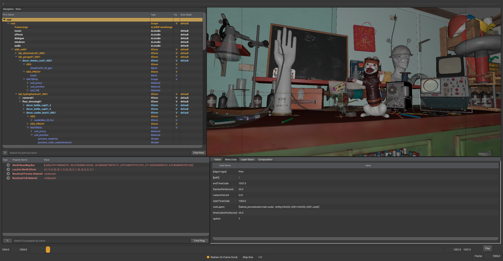
Animal Logic ALab USD 場景，於 USDView 中的畫面
一般來說，hierarchy 包含了數個實體（即 node 或節點），這使得這些 node 能與其他 node 建立 parent / child / sibling（父子或相鄰）的層級關係。
在 USD 中，這些 node 可以是具備「物理實體」的東西（您可以想像成 Geometry 幾何體、Animation 動畫 data 等…）或者是更抽象的東西，諸如群組物件、materials、shaders，甚至連「設定值」本身都可以被表達為 hierarchy 裡的一個 node。
USD 與其他傳統場景描述技術存在巨大落差的地方在於，它具備了「將多個 hierarchy 搭配不同的行為規則組合在一起」的超強能力（這項能力又被稱為 Composition (合成)）。在 USD 中，您總是以非破壞性 (non-destructively) 的方式去參照 (refer) 或是嫁接另外幾個 hierarchy 到當前的檔案中、重新定義先前就已定義過好的 data、又或者是讓一整個超大團隊在「同一個 hierarchy」上進行天衣無縫的協作開發。
🖼️ USD 場景的 Composition (合成) 範例
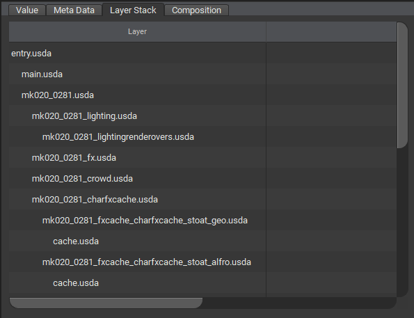
構成 Animal Logic ALab USD 場景合成系統（於 USDView 顯示）的 USD 子場景清單片段
等等，不只這樣！
除了前述「非破壞性地合成 hierarchy」之外，USD 更是以極高擴展性 (extensible) 為初衷所打造的。
舉例來說，您可以開發一款 plugin 來擴展 USD 功能，讓它能夠自動解析某種客製化或是商用專屬檔案格式，並允許您直接在 USD 環境去「原生地」使用那些檔案。
📝 備註
業界一個最經典的實例，就是實現在 USD hierarchy 當中原生且直接地調用與讀取 FBX 檔案格式。
總體來說，USD 透過定義一套共通且共享的溝通「語言」來描述場景與 3D data，藉此達到成為一個高度可攜帶且流通的交換格式。
這個概念雖然不算新穎，但在這一切優勢之上，它還同時附帶提供了一個強大無比的方法來統一繪製 (draw)／渲染 (render)／成像 (image) 這些複雜的場景。這個渲染成真的一切，都要歸功於 USD 御用的後端渲染框架：Hydra。
⚠️ 注意
本書目前尚未涵蓋跟 Hydra 相關的進階概念，未來隨著版本的更新可能才會考慮補齊。
USD 不是什麼？
不僅僅是一種檔案格式而已
雖然絕大部分的 Artist（美術藝術家）都是透過存在於硬碟上的實體檔案 (“file-on-disk”) 來跟 USD 產生連結與互動的，但我們更傾向於將 USD 視為一個完整的「生態系統 (ecosystem)」，而不僅僅是一種寫在硬碟裡的新型副檔名而已。
如果考慮到它蘊含的巨大潛力與已經達成的無數創舉，單純稱它為「一種檔案格式」實在是滿委屈這項顛覆產業的技術的。
它就是一塊任您無縫塑形的黏土，或者，您當然也可以完全保持原狀，就這樣「開箱即用」的操作它。甚至，您可以完全省略將它存入硬碟這個步驟（全程在記憶體中生成與運作）。當它成為一種生態時，您連參照其他 USD 場景的方式都變得非常靈活。如果您是名開發者，更能透過編寫簡易的 plugin，整合任何業界主流或是客製化的算圖引擎 (rendering engine)，讓引擎徹底理解並渲染由 USD data 描述的世界。
💡 資深提示！
只要您使用 USD 的頻率與時間夠久，它將會變成一種重塑您邏輯的信仰體驗 😄
它不能用來作為內容「創造」的替代品？
USD 可以做到很多突破天際的事情，但它還是有些明顯「力有未逮」的界限。由於 USD 基礎架構的設計核心，並不允許您進行 動態互動數值 (interactive values)。意思是，通常在 USD 中這類 value 只會被計算與解析「一次」，除非整個場景發生了「重新合成 (re-composed)」，這組數值就不會再有任何動靜。雖然在真實世界裡，這些 value 的運算邏輯可能比上面我說的還要稍加複雜一點，但作為概念建立，把它想成這樣會讓您學習起來簡單很多。
從最初的系統設計角度來看，USD 是以「低記憶體佔用且高延遲性 data 讀取 (low-memory footprint, higher-latency data access)」為核心宗旨去打造的。因此，為了讓記憶體耗損降至最低限度，它在讀取與操作那些 data 時，速度絕對會比「佔用超高記憶體、換取無延遲存取與頻繁刷新資料」的系統還要慢上許多。後者為了達成即時運算邏輯，犧牲了龐大的記憶體佔用。
正因為這個最核心的設計邏輯，USD 非常難以被拿來表達像是 Rigging（骨架綁定）這類高度依賴毫秒等級、即時與動態運算 data 頻繁存取的系統。但在這條死路外，因為它具備了「高擴展性」的潛能，這讓各大型視效工作室有辦法自行去 定義 (define) 各自專屬的相關系統。可是，請記住，我們講的只是宣告了一個 規範 (specification) 而已——這個骨架本身並不會在 USD 環境體系內被自動進行 運算 (evaluated)，它勢必還是得依賴著一個強大的宿主軟體（例如 Autodesk Maya），由宿主軟體將這些 USD 通訊訊息提取出來、吃進去，最後翻譯成該軟體獨家專利能看得懂的 Rigging 系統來操作。
📝 延伸閱讀
如何取得 USD
USD 是當今世上一套強大得令人髮指的技術生態系 (technology stack)，但不幸的是，這也是導致初學者極度難以上手的主因。它是由一連串巨大的資料庫與工具所組成，所有子項目結合成了一套構築起 USD 的生態系統。隨著第三方工具整合的成熟度越來越高，單純想要「取得並安裝 USD」這件事有時候也變成了一門學問。
身為最核心推手，皮克斯動畫工作室 (Pixar Animation Studios) 選擇在 GitHub 上公開完整的原始碼。對於許多軟體開發者來說，這通常會是進入這個世界的最一開始的起點。他們會將整個儲存庫 clone 回來，掛上這套生態系指定的 Python 版本與對應的編譯器，這時他們可以泡杯咖啡，讓電腦花上好幾個小時瘋狂運作，將所有的軟體工具鏈與程式庫在他們的系統底層給組裝並編譯起來。
想當然耳，這麼硬核的玩法絕對不是適用所有人的。非常慶幸地，這也絕對不是取得與踏入 USD 世界的唯一方法。
身為一名初來乍到的新人，通常有另外兩條路可以帶您進入 USD 的大門。
🔰 透過宿主應用程式 (Host Application)
Host Application 指的是那些選擇在自家的商業軟體生態系中原生植入 USD 工具庫،甚至是在誕生之初，就整間公司重構，將底層核心徹底建立在 USD 規範上的第三方軟體。
以下是一份簡要的列表，列出了業界較為知名、且具備深度整合 USD 的宿主軟體：
- NVIDIA Omniverse Create - 這是一款由 NVIDIA Omniverse 完全基於 USD 所打造的超強視效組裝軟體，這款軟體能讓您無縫體會並接近最原汁原味的 raw USD 操作體驗。
- Autodesk Maya + MayaUsd - 全球頂尖的工業級 3D 動畫軟體，Maya 提供的 USD 整合是以外掛元件形式存在，可以在安裝主程式的過程一併安裝。
- SideFx Houdini + Solaris - 頂尖特效視覺合成 3D 軟體，其內建的視覺開發模組 (Look Development Suite) 被稱為 Solaris，該模組也是徹底依託並打造於底層最厚實的 USD 協議之上。
🔰 獨立運行版本 (Standalone)
就現狀來說，這大概是對一般單純想要畫圖的 Artist 最不友善的一個選項。但如果想單純享受由皮克斯官方最原汁原味打造的 USD 體驗，不妨可以挑戰看看這個路線。這條路線又分為兩種：
已編譯安裝檔 (Prebuilt binaries)
雖然官方放出的編譯後安裝檔案極其稀有，但在業界致力推廣這項技術的最大軍火商 NVIDIA 其實為大家默默準備了不少，您可以在 developer.nvidia.com/usd 取得。無中生有：自己親自編譯 (Compile-it-yourself)
這就是我們上面提過的，最傳統、也最地獄的 USD 開局方式。就像文章開頭所說的那樣，這對不是工程師背景出生的使用者來說，無疑是個極度令人恐懼的過程。但如果您依然對這件事充滿著濃厚的狂熱，想親手挑戰看看；皮克斯官方真的提供了一份非常詳盡且不可思議的超強編譯指南！
如果您是 USD 世界的新人，且目的很單純地「我只是想學習架構出一個 USD 的專案結構並與它互動」；我們會強烈建議您直接將您的 USD Composition (合成) 專題與 Layer 建立在市面上任何一款您熟悉的「宿主應用程式 (Host Application)」裡。儘管每一款宿主都有它各異的學習曲線跟獨特的挑戰性，但這絕對是幫助您飆速無痛進入狀況的最佳途徑。
📝 關於本書的宣告
為了提供沒有受任一宿主框架污染的觀念，這本書當中出現的所有截圖畫面與展示，皆採用最原始的
Compile-it-yourself原生版本，且絕大部分的操作也都是透過其內附的usdview工具軟體來進行展示。
USD 術語 (Terminology)
在前言告一段落後，接下來的章節將會全神貫注地專注在那些想理解 USD 就非懂不可的核心術語 (Terminology) 上。只要您能先把這些基礎的行話 (jargon) 給摸透，未來您在嘗試去跟隨各種 USD 教學時，絕對會感到如魚得水。
強烈建議您按照順序來閱讀這一章裡的所有頁面。
⚠️ 警告
這一章節的內容並不打算包山包海，有許多概念因為太過繁瑣而被刻意簡化，某些艱澀的點甚至會選擇直接略過。
換言之，這系列文章絕對_不應該直接拿來取代官方的 USD 術語表 (Glossary)_，我們強烈建議您在入門後，再去把官方的頁面給確實地啃過一遍。
Prims
它是 Primitive 的縮寫，同時也是 USD 當中最不可或缺的核心組件。
Prim (基礎物件) 也就是 hierarchy 中的 node，因此能與其他 Prim 之間建立 parent/child 關係；這意味著一個 Prim 可以擁有多個子 Prim 或同層級的 Prim (siblings)，本身也能夠從屬於另一個父 Prim。
在下圖中，hierarchy 裡的每一個 node 都是一個 Prim。
💡 Prim 範例
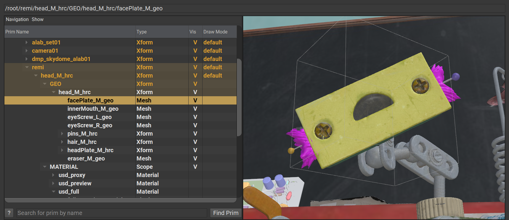
眼尖的讀者可能會注意到，Prim 可以擁有特定的 type。例如 Xform、Mesh、Scope 以及 Material 都是特定的 Prim type。
這些 type 自帶有預設行為與相關的 data，其運作體系我們會在後續章節中詳述。
ℹ️ 提示 使用者也能夠定義專屬於自己的 Prim type。
儘管 Prim 本身標示了它們是什麼 type 的場景元素，但它們並不一定確實握有 data。然而，它們可以被視為具名 data 的「載體 (containers)」，而這些 data 通常是以 Properties (屬性) 的形式來呈現。
🔗 延伸閱讀 ↪ USD Glossary - Prim
Properties
Prims 可以擁有 Properties (屬性)，本質上它們就是具名且帶有 type 的 data。
USD 裡的 Property 實際上是兩種截然不同型態 Property 的統稱：
🔰 Attributes
Attributes (數值屬性) 是帶有直接 value (數值) 的 Property，且這些數值可能會隨時間產生變化。
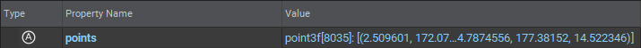
🔰 Relationships
Relationships (關聯) 則是負責指向其他 Property 或 Prim 的 Property。
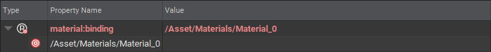
從上述例子中，您可以看到 Property 是由 name (名稱) 以及帶有 type 的 value 所組成的。
這些 Property name 也能夠加上 namespace (命名空間)。一個 Property name 可以擁有一或多個以 : 隔開的 namespace 標識符。
再仔細端倪 Relationship 的範例，material:binding 這個 Property name 實際上就是使用了 namespace。這個 Property 的名稱本身是 binding，而它是從屬於 material 這個 namespace 裡。
Namespace 可以用來將多個 Property 進行歸類或群組化。
📝 延伸閱讀
Path (路徑)
Prim 與 Property 都是藉由在 scene hierarchy（場景階層）中的唯一 path (路徑) 來進行識別的。它們是 hierarchy 的純文字表達形式——這就好比我們在絕大多數作業系統中習慣使用的資料夾路徑一樣——只不過在這裡，每一個 Prim 與它的 parent 或是 child 之間，是透過 / 作為分隔符號 (delimiter) 來標示的。
就如同資料夾一樣，path 可以是相對 (relative) 的也可以是絕對 (absolute) 的。絕對的 path 永遠會以 / 作為開頭。
ℹ️ 提示
/在 USD 中是一個極度特殊的 path。它被稱作為 PseudoRoot (偽根節點)。
在下方的範例中，被強光標記出來的 path /root/remi/head_M_hrc/GEO/head_M_hrc/eyeScrew_L_geo，就是一條指向名為 eyeScrew_L_geo 的 Prim 之路徑。這條路徑是由以下 hierarchy 逐層建構出來的： / → root → remi → head_M_hrc → GEO → head_M_hrc → eyeScrew_L_geo。
🖼️ Prim Path 範例
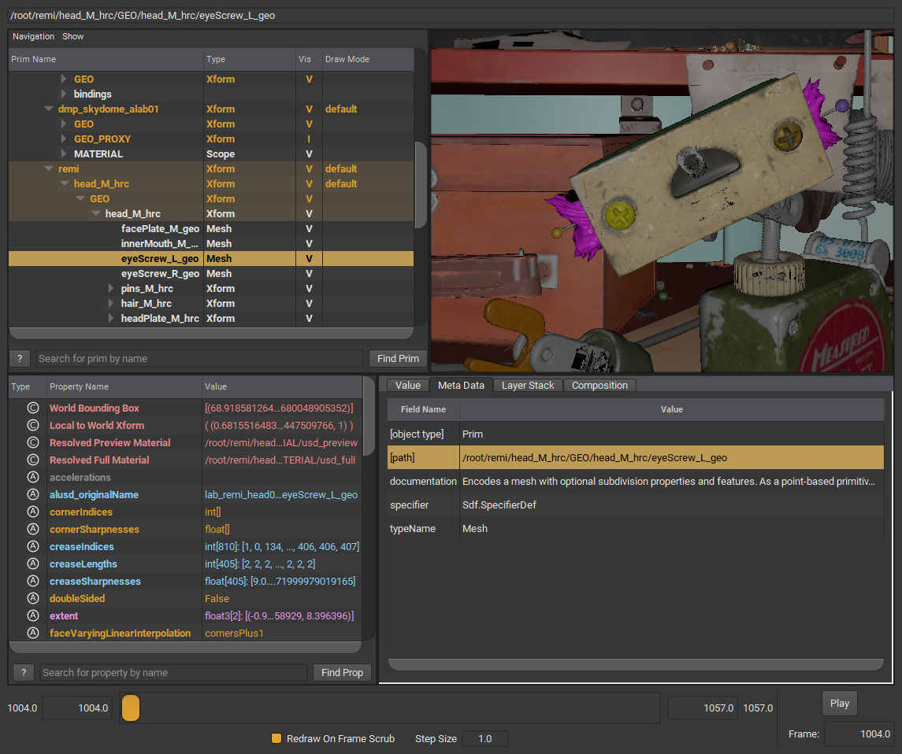
若是換成 Property 的狀況，我們沿用剛才的例子，點進去檢查名叫 points 的 attribute (數值屬性)，它就會回傳 /root/remi/head_M_hrc/GEO/head_M_hrc/eyeScrew_L_geo.points 這樣一段 path。Property 的 path 是透過將 Property 的名稱用 . 符號作為分水嶺，銜接在上一個 Prim path 之後所建構而成的。
🖼️ Property Path 範例
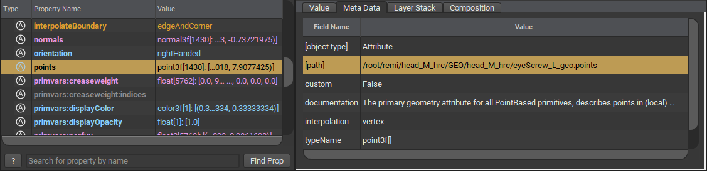
⚠️ 注意
USD 中的 path 全部都是基於 name (名稱) 所產生的，這代表您無法定義出兩條完全相同的 path。套用到實務層面上，這代表您無法擁有兩個或兩個以上「名稱一模一樣」的 同層級 (sibling) Prim。
📝 延伸閱讀
Layer (圖層)
Layer 是一個用來網羅 Prim 及其 Property 的集合體，它可以被儲存進硬碟中，或是被載入到記憶體裡供人讀取。正因如此，它其實可以被視作是一個「具備存檔能力的 hierarchy」。
業界標準的 USD Layer 可以透過以下這幾種實體檔案存在於硬碟中：
| 副檔名 (Extension) | 描述 (Description) |
|---|---|
.usda | ASCII 純文字，人類可以直接閱讀的結構 |
.usdc | USD Crate 檔案格式。這是一種為了追求極致效能而生的高效能二進位檔 (binary file)，人類無法閱讀 |
.usd | 可能是 Crate 也可能是純文字格式 |
.usdz | 無壓縮的打包封裝格式 (.zip) |
ℹ️ 提示
USD 允許您透過一種極度特殊的 plugin 形式（即
SdfFileFormat）來無上限擴展那些能被作為「Layer」載入的檔案。說穿了，上面羅列的那些預設檔案類型，本質上也都是實作了這類型 plugin 的產物。
若您掌握了這種SdfFileFormatplugin 的開發邏輯，您甚至可以實做出讓 USD 原生支援並載入諸如.fbx、.abc、.obj(甚至是任何東西) 的強大整合能力。
📝 延伸閱讀
Metadata (中繼資料)
Prim、Property，甚至是它們所從屬的 Layer 本身，全都可以加上 Metadata (中繼資料)。這是一種額外的_靜態_資料（static data，意味著它不能隨著時間而產生數值上的動態變化），不僅可以提供給 USD 系統看，也能讓使用者自由讀取、利用或宣告定義。
Metadata 可以用來描述各種系統行為、賦予特定意義、或者是呈現成文件。USD 出廠時就已經內建了一套極度強大且全面的 Metadata 架構供大家使用。
💡 提示
開發人員也可以透過撰寫 USD Plugin 的方式來自定義全新的 Metadata！
簡單的 Metadata 範例
Layer Metadata
🖼️
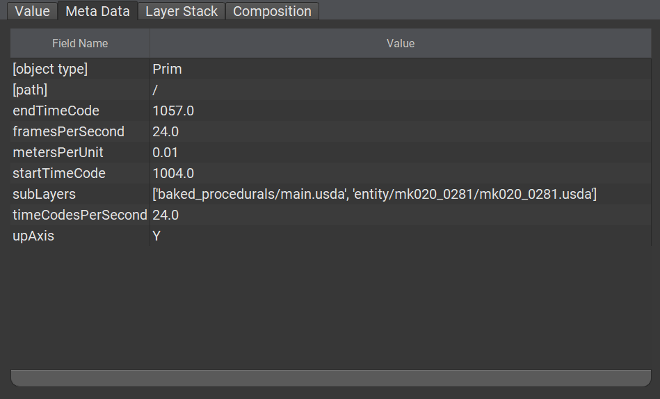
在上方的截圖中，我們選取了位於 path / 的 PseudoRoot，此時 usdview 中關於 Metadata 的介面面板會亮起高光。這個 Root 代表了來自 Animal Logic ALab 場景的 entry.usda 這層 Layer。entry.usda 定義了諸多 Metadata 供人檢驗，向使用者呈現了有關於它自己的以下情報：
- 這層 Layer 所採用的線性長度單位是
0.01公尺（即為公分） →metersPerUnit = 0.01 - 這個場景的朝上軸向為
Y軸 →upAxis = Y - 還有另外兩層 Layer 參與貢獻了這個場景（這部分我們晚點會在 Local/Sublayer (本地子圖層) 中進一步探討） →
subLayers = [...] - 該檔案在 time code
1004.0到1057.0之間擁有 Animation (動畫) 資料，且每一秒配備有24.0幀的速度 (framesPerSecond) 以及等同的 timeCodesPerSecond 配置。startTimeCode = 1004.0endTimeCode = 1057.0framesPerSecond = 24.0timeCodesPerSecond = 24.0
⚠️ 警告
請務必注意，雖然這當中有很多的 Metadata 單純只是用來「告知資訊」，但在核心的 Metadata 架構裡仍然有非常大一部分的資料，可是會對內部運作產生極為嚴重的「副作用 (side effects)」，它們甚至左右了 USD 在底層究竟該如何建構世界。
舉例來說，
metersPerUnit是單純作為情報的存在；但是反觀subLayers，一旦您編輯修改了它的數值，整個天下可是會為之震動的！
📝 備註
其他像是 Autodesk Maya 或是 Sidefx Houdini 這類型的 USD 宿主軟體，也可以自己選擇要去抓出並解讀某個 Metadata 裡的關鍵屬性來產生動作，即便 USD 本地環境可能不會對此做出任何反應。
Prim Metadata
🖼️
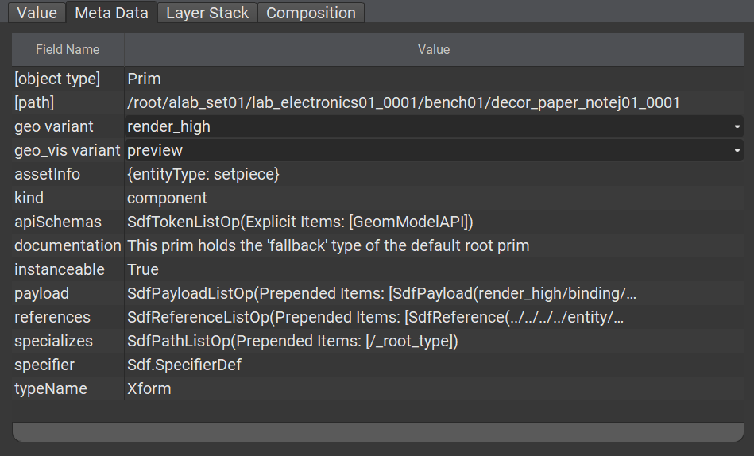
Prim 身上的 Metadata 可以推論出大量跟這顆 Prim 本身有關的情報身世，包含它在這個場景裡具體是怎麼被使用的（請參見 Composition (合成)）、它擁有哪種 Property 等等。
從上圖中我們可以得知位在 /root/alab_set01/lab_electronics01_0001/bench01/decor_paper_notej01_0001 的這顆 Prim：
- 是一個
Xform類型 →typeName = Xform - 此物件被轉換為實例 (instanced) 如分身般存在著（關於這點，稍後會在 Instancing (實例化) 章節詳解） →
instanceable = true - 擁有兩個 VariantSet (變體集)（這也會在稍後 VariantSets 詳解）→
geo跟geo_vis - 被歸類標記為
component這個階級（我們會在詳談 Kind (分類層級) 這個 metadatum 時一併討論） →kind = component - 諸如此類不勝枚舉。
Property Metadata
🖼️
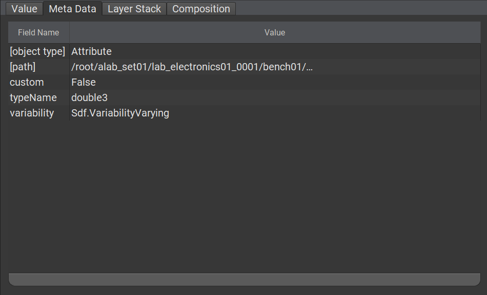
最後我們來看 Property 的 Metadata。這類資料的作用是用來揭露跟這個 Property 數值自身相關的最細緻情報，例如：
- 它是什麼 type 型別 →
typename = double3 - 它的數值是否會隨著時間變化（動畫） →
variability = Sdf.VariabilityVarying - 它是某個客製化的 “out-of-schema” 屬性嗎（請見稍後的 Schemas 篇章）→
custom = false
📝 延伸閱讀
Layer Stack (圖層堆疊)
每一個 Layer (圖層) 內部都會跟蹤紀錄屬於自己的那一份「local (本地)」圖層堆疊清單，這份清單上紀載了所有對該 Layer 產生貢獻的圖層們。您可以把這份 stack 視為一組「經過排序與羅列好的圖層集合體」，這些被堆疊進來的圖層將會共同合作並決定出該 Layer 的 hierarchy 結構以及 Composition (合成) 結果。
🖼️ furniture_workbench01.usda 的 layer stack 範例
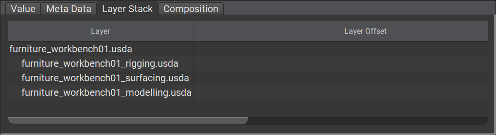
在上圖中，
furniture_workbench01.usda這層 layer 實際上是由「另外三層 layer 加上它自己」共同組網而成的。在這個案例裡，它依序把furniture_workbench01_modelling.usda、furniture_workbench01_surfacing.usda以及furniture_workbench01_rigging.usda用這個秩序疊加在它的 Layer Stack 之中。若您從視覺上的清單來看這個順序可能是反過來的，畢竟它是個「堆滿東西的高塔 (stack)」嘛！只要記住一個鐵則：在這個堆疊裡樓層爬得越高，那一層 layer 的「權重與話語權 (important)」就越大。
ℹ️ 提示
對於某個 Layer 專屬的 Layer Stack 而言，它永遠會把「自己的 data」給強壓在整座 stack 大權在握的最頂層，這也意味著它對「自己」的覆寫權限永遠是最至高無上且最重要 (most important) 的。
📝 延伸閱讀
Composition (合成)
說白了，這就是一種將各式各種的 Layer 與散落其上的 Prim、Property 以及 Metadata，透過被稱為 Composition Arcs (合成弧) 的機制媒介，強行組合與揉捏在一起的偉大行為。
雖然說把各圖層集結在一起這個動詞可以被稱作是在「合成 (composing)」它們；但在底層架構上，USD 的合成引擎真正在調用的東西，其實是各個 layer 背後深藏不露的 Layer Stack (圖層堆疊) 們。
⚠️ 警告
清楚釐清這件事的定義是非常、非常重要的！因為這意味著：當我們嘗試去 target (指定目標) 到某一個 Layer Stack 時，這也代表著「在那個目標 Layer Stack 內部所孕育出的所有 Composition 合成結果」，全都會一併被牽連並算進最後的貢獻 (contribution) 當中。
🖼️
furniture_workbench01.usda裡/rootprim 的合成範例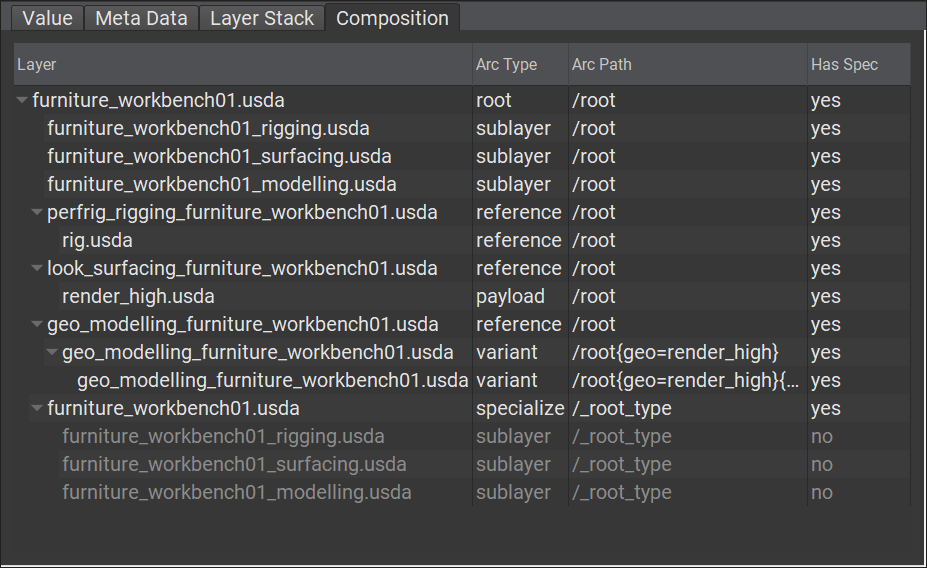
這個範例結構第一眼看起來可能會讓您覺得龐雜且無比困惑，但它其實想表達的事情只有一件：「位於
/rootpath 下的這顆 prim，是受惠於清單表上所有羅列的 Layer (更準確地說，是靠呼叫它們背後的 Layer Stacks) 共同貢獻 (contributions) 結合成的產物」。
表格最前面的Arc Type這一欄，則標示了這些 Layer 到底是 如何 (how) 將這份貢獻推進給/root並長成您現在看到的最終「規格 (specification)」的（更多細節稍後再談）。
📝 延伸閱讀
Stage (舞台)
這是在開啟 Layer 之後被「合成」出來的最終結果。您可以把它想像成為開啟一份 .PSD 文件後的 Photoshop 畫布。所有包含在您 Photoshop 裡面的圖層會彼此交互作用，最後誕生出一張「最終的影像」。那些圖層依然活著、還是可以被單獨編輯、被刪除或被互換等等… 但您真正在螢幕上所看到的那個終極視覺結果，就是在 USD 中被稱為 Stage (舞台) 的東西。
這個合成出來的產物也可以被整個「平面化 (flattened)」並儲存成單獨的全新 Layer，這就跟把上述提到的 PSD 原檔拿去輸出成 JPEG 的道理一模一樣。
📝 延伸閱讀
Opinions (意見/主張)
話題回到 Property 身上，當您在某個 Layer 中去設定某個 Attribute (數值屬性) 的大小、打上 Metadatum 的標籤又或者是構建出一條 Relationship 時，這個強加數值的動作，等同於您實際上是在對「那個特定的 data 數值」表達了您的 Opinions (意見/主張)。會這樣稱呼它的原因，正是因為這些被強加的賦值，永遠都有可能會被後面的人用各種方式給無情推翻與竄改！理解這個概念這對 USD 面對 Composition (合成) 來說是非常非常核心的基礎。
若換個不同視角的說法，在其他 3D 軟體裡「設定一個數值」往往暗示了這個動作是最終的宣判，一槌定音，讓該數值變成了無法改變的事實 (immutable)；然而在充滿包容與協作精神的 USD 世界裡，您提出意見 (Opinion)，僅僅只是在說：
💬
「以『我目前的這層 Layer』為界，我希望這個東西的數值是
<填入您的數值>」
如果這個數值在更早之前就已經存在過了，您當下的動作本質上就是在「覆蓋 (overriding)」掉前人的主張而已。
📝 延伸閱讀
Overrides (覆寫)
當您在 Layer 中表達意見 (opinion) 時，有一種做法是把該 property 早就已經定義好的舊數值給「重新定義 (redefine)」一番。這個無情的機制就叫做 overrides，顧名思義，因為您正在 覆寫 (overriding) 掉前人留下來的遺產。
然而，千萬要牢記一件在 USD 中至關重要的底線：最一開始的原始 data (original data) 自始至終都能保持純淨完整、未曾受過任何一絲的改變。這種「覆寫」的作為，只會而且永遠只存在於「您提出這個覆寫行為當下的那一層 Layer」裡面而已！
毫無懸念的，這是您在學習 USD 的漫漫長路中 最首要 去建立及領會的概念。各種各樣的意見 (Opinions) 加上與它們的「數值解析 (value resolution)」（也就是去解析到底最後是哪一條數值能在層層堆疊的大逃殺中脫穎而出、被真正實踐），這兩者正是驅動起整個 Composition 機制的關鍵齒輪。
以下是一個非常經典的案例，展示了一條被前人定義過的 attribute opinion 是怎麼硬生生被覆蓋掉的。
🖼️ override 範例
- 上圖展示了
cube_sphere_torus.usda這層 layer 裡面，因為某個 attribute 第一次被建立而產生出的 [opinion (意見/主張)] (/GEO/Cube.size)- 接著展示了
referenced.usda，在這個環境中發生了：
- 利用了一種名為
referencing的 [composition (合成)] 機制，將剛剛的cube_sphere_torus.usda整層打包請進了referenced.usda這個檔案中- 針對那個在上游就已經被定義過的
/GEO/Cube.sizeattribute 提出了強烈的意見，但在這個語境之下，這一切都只發生在我們剛才引進的cube_sphere_torus.usda脈絡裡，本質上這就是去硬生生蓋掉它原先的大小- 最後展示了經過層層交疊與剝削後，最後合成輸出的終極結果，也就是所謂的 [stage (舞台)]
{kind=link}
📝 延伸閱讀
Stage Traversal (場景遍歷)
通常這是一個在使用 USD 進行程式開發寫扣時才會遇上的概念，但對於一般用戶而言，理解它也是百利而無一害的。Stage Traversal (場景遍歷) 指的是在 Stage 中開啟並讀取了 Layer 之後，USD 系統需要「一路爬梳過」這個層層疊疊的場景樹 (scene graph) 的過程。這個遍歷的過程是可以靠著下達特定的「規則（或稱述語 predicates）」來進行篩選與過濾的，例如限制它只能爬梳某幾支從屬的子樹幹線 (sub-trees)，或者乾脆在遍歷期間豪邁地直接斬草除根、抹掉某部分的 hierarchy 不讓它顯示出來等等。
在預設狀態中，USD Stage Traversal 是只會考慮讀取並爬梳那些顯示狀態為活躍 (active)、具備實體定義 (defined)、已經被裝載進來 (loaded)，且並非抽象類型 (not abstract) 的 prims 而已。取決於您使用的是市面上哪一款軟體或工具，使用者通常可以透過介面來手動改變這種運算條件。但若您是一個開發者，您當然能夠透過呼叫相關程式介面來對這種機制進行完全的掌控。
🖼️ 在 USDView 中切換顯示 Abstract prims (抽象物件)
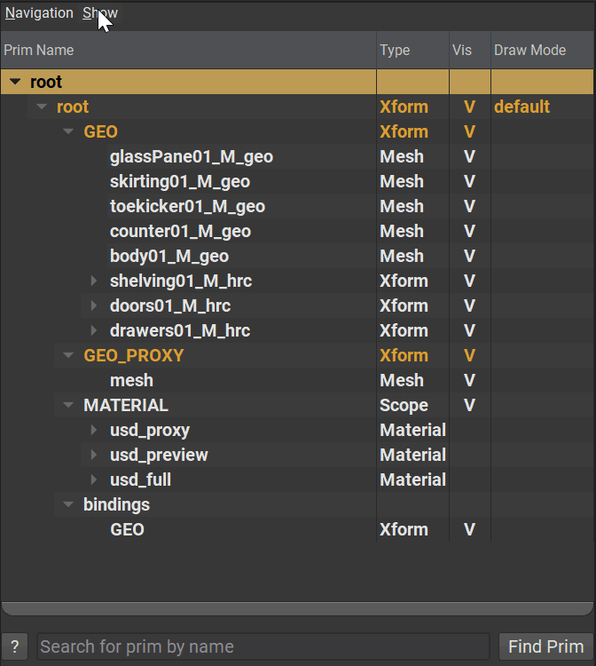
這裡有一顆
_root_type的 prim 被宣告並定義成為class等級，這在 USD 的體系中是會被視為是一種 abstract (抽象) 狀態的特洛伊節點。在通常狀況下，若您使用 USDView 讀入這層 Layer，它會神隱且絕對不會顯示在 hierarchy 列表上。
然而，一旦您至 hierarchy 視窗選單中的Show分頁去開啟Abstract Prims (Classes)顯示條件時，那些所有被歸屬為像是_root_type這種抽象狀態的 prims 就會無所遁形地全部被攤在陽光下。在系統底層，這一切的操作就是靠著去竄改 Stage Traversal（場景遍歷）中的 predicate (述語條件) 來達成的。
📝 延伸閱讀
Kind (分類層級)
Kind 是一種掛載在 Prim 層級的 metadatum，它的功用是能將數顆 prim 以及所有它底下的子子孫孫直接提升至比它們自身實體定義（像是 Mesh, Sphere, Cube 等）還要高出一個次元的「宏觀概念定位」。
🖼️ 套用 Kind 分類的實戰
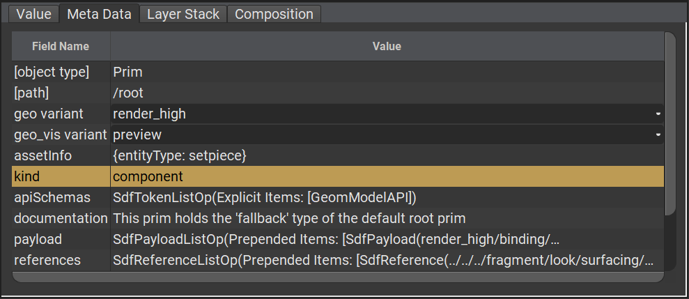
皮克斯原廠隨附出貨時，USD 裡就自帶了幾種不同位階的 kind 等級來給這群 prims 當作身分標記：
| Kind 分級 | 它的工作是什麼？ |
|---|---|
| model | 所有模型 kind 中最基礎的父層級。model 本身被視為一個極度抽象的原型特質，它永遠不應該被拿來作為「任何單一 prim 身上的唯一實體標籤」使用。 |
| group | 就是個把其他一群 model 給「圈起來」的模型群組 |
| assembly | 這是一個具備極度重要地位的打包模型，它通常代表了一個「對外發布的完成體 asset」，或者是由外部 reference 進來的組裝模型 |
| component | 想像它是一片「長滿葉子的終結點基底模型 (leaf model)」，它不再允許自己的肚子裡裝載任何其他的模型 |
| subcomponent | 一個 component 身上被獨立指認出來、有著特殊任務的「子零件」模型 |
💡 提示
您絕對可以透過各種客製的 USD Plugins 來隨心所欲地擴增那些清單上沒有的
kind出來！
為模型標注 kind 最大的實質意義，在於能夠在進行系統 Stage Traversal 的期間「神速」找出那些符合您「心儀身分」的 prim 類型。比方說，系統可以靠著掃過一遍 kind 的標記籤章，去有選擇性地一舉抹除 (prune) 整個特定位階底下的老少婦孺物件樹！
所以 Kind 到底實際是如何參與生產的？
讓我們來檢視 Animal Logic ALab 提供的根圖層為例，我們可以看到身處體系最高層級的那些金字塔頂端 prim，每一個都被莊嚴地標注上了 assembly（組裝體）的頭銜。這使得我們在極其龐大的場景中依然能輕鬆依層級定位出所有的「實體道具 asset」。在下圖的展示中，無論是 lab_workbench01_0001 或甚至是它的父物件 alab_set01 都被賦予了 assembly 的最高階層授權。
🖼️ lab_workbench01_0001
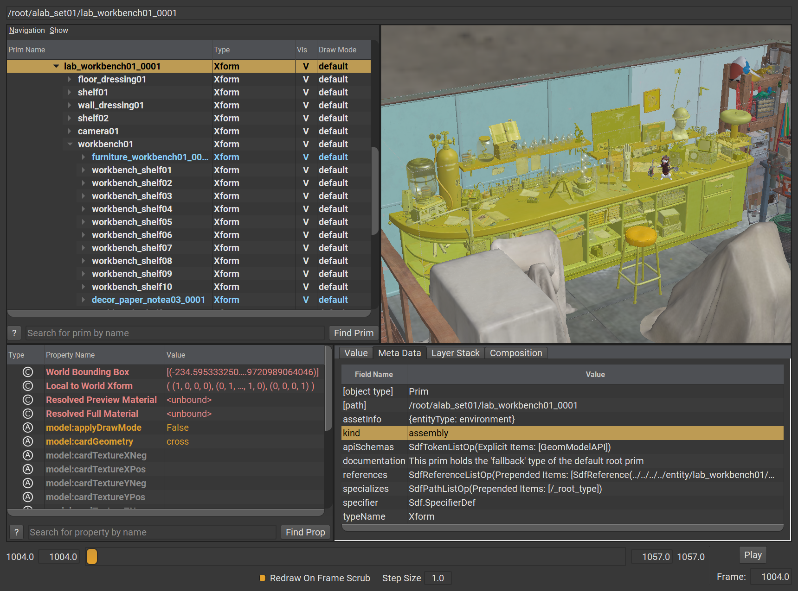
一個只要是被標注擁有 assembly 頭銜的孤獨 prim 肚子裡，理所當然包含了成千上萬掛有各式各樣不同等級 kind 標注的其餘 prim。我們接著往深處挖掘剛才的第一個範例，我們可以看到光是那張工作桌在 /root/alab_set01/lab_workbench01_0001/workbench01 這個位置本身，也僅僅是被標示為一個單純的 group 而已。
🖼️ workbench01
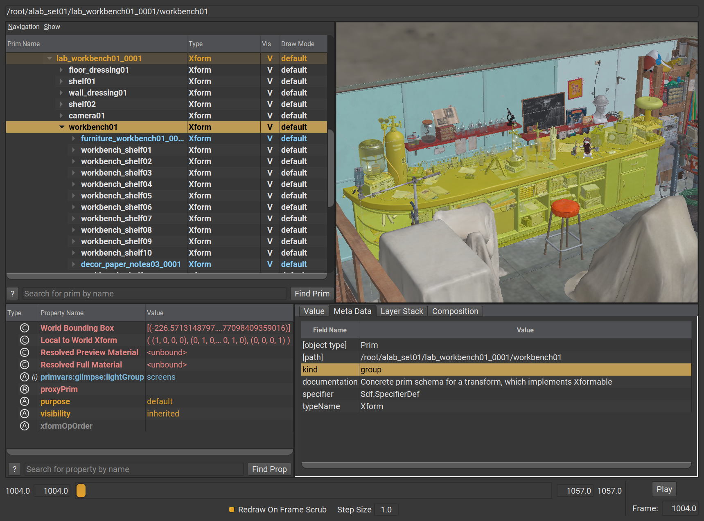
接著如果我們潛入海底的更深處，看見了 /root/alab_set01/lab_workbench01_0001/workbench01/furniture_workbench01_0001 這顆孤獨的 prim 則被徹底標示了 component 的結案標籤。按照規矩，但凡只要是標注為 Component 的這群傢伙，基本上裡面就不應該再繼續包山包海地去儲藏任何同樣是從 model 血統衍生出來的那些複雜 kind 類型了，但是，它還是可以容許少數擁有 subcomponent 這種最微末階級身分的朋友出現。
🖼️ furniture_workbench01_0001
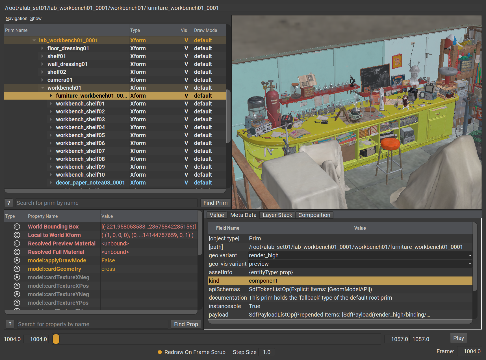
透過上述這種把身分都給標明的層層階級化之後，針對那些龐大複雜的物件，我們只需要透過尋找底層這類的 component 物件們，就可以在不必勞心費神去層層過濾底層那萬丈深淵般 hierarchy 結構的前提下，達成非常有效率且強大的物件資產搜索以及 instancing (實例化) 調用。
📝 備註
每個視效生產環境的體系都不太一樣，因此對某間特效工作室而言，什麼才算是一顆
asset，到了另一間可能標準又是南轅北轍。然而，這種透過kind來建立階級金字塔分類的思想哲學，在工業界實務上依然能創造出無與倫比的巨大產能價值！
📝 延伸閱讀
Purpose (渲染標記)
Purpose 是一種可以被利用來賦予某一顆 prim 及它所有次代們一個極高層級身份的「顯示權限旗標 (visibility flag)」用的 attribute，通常都是指在針對 Render (算圖) 的最後把關脈絡中應該如何被顯現這件事來作為它的宿命。
舉例來說，如果有一顆 prim 上面的 purpose attribute 就已經擺明車馬被設定為了 render 模式，那只要當它遇上那種被使用者嚴格要求只需把 proxy 替身 prim 給畫出來的渲染引擎時，它就會被系統狠狠地排除在渲染清單之外。
在某種程度上來說，去決定與干預場景顯示的 purpose 設定操作，其實可以被廣泛地想像成是一種針對 Render (渲染) 工作的 Stage Traversal 操作。
就目前現狀而言，系統為 purpose attribute 只開出了四種可用的鐵血屬性價值：
| Purpose 種類 | 描述 |
|---|---|
default | 只要沒被設定任何標示就算這個。它代表這顆 prim 沒有任何背負特殊的渲染宿命考量，這使它會在無腦在每一次所有的渲染通道中被看見並繪製出來。 |
guide | 一旦被打上這類特殊的標籤，通常都是因為某些在進行互動溝通時的商業軟體需要去畫出「視圖導向的輔助幾何物件」。您可以把它想像成：當我們為了展示某些像是綁定的骨架控制器幾何 (controller geometry for rigs)、關節軸向等工具而發出請求的專利。 |
proxy | Proxy (代理) 這個記號通常只被允許打在那些「為了被放置在視窗 viewport 級別環境下能流暢互動」而產生的「另一組具備輕量型面數與細節代替品 (lightweight representation)」模型身上。 |
render | 這些是即將被轉換成圖片的「最純、最高無上」的海量面數資料模型。通常為了解決在 offline (非實時渲染，例如算電影畫面) 環境下進行最極限的成像渲染結果才會去把這開關給對齊過來。 |
⚠️ 警告
請特別注意，跟那些百花齊放的 Kind 完全不同，
purpose這種屬性可容不得您在開發中隨意任性地加添任何 custom values！
🖼️ 範例： 在 proxy 模式與 render 模式兩種 Purpose 之間進行暴力切換
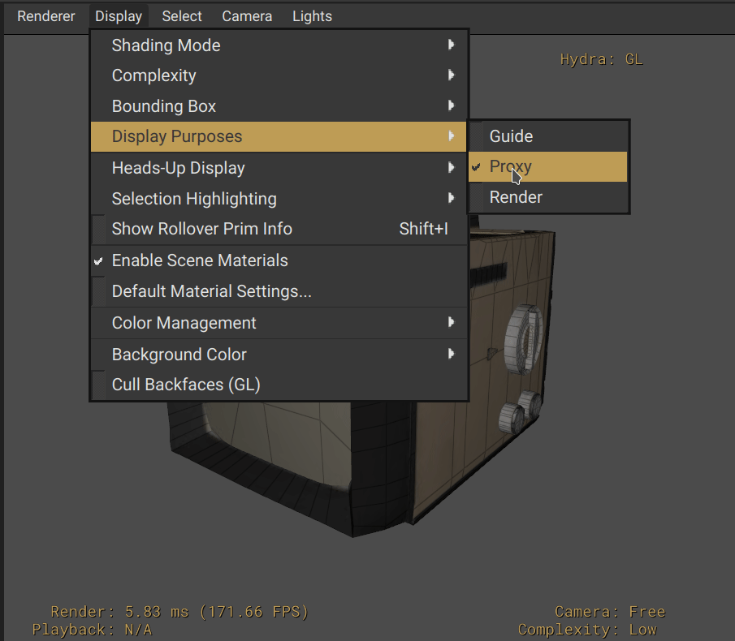
📝 備註
就像您在上方的展示中看到的那樣被重塑的操作結果一樣，
purpose就連存在本身都不是個能用非黑即白定義的鐵則！它無比大氣地允許您在場景中同時啟動著proxy與render兩種目的，並把這兩者的視覺結果一併重疊顯示在您的實體主宰畫面上。
在這裡我們將 /root/GEO 的 purpose 給強行改寫設定為 render 模式，這下子除非那台辛勤工作的渲染器有去特別請託（要求回傳所有標記有 render purpose 名牌的傢伙）給它看，這顆物件才會有被看上的價值：
🖼️ Render 的目的
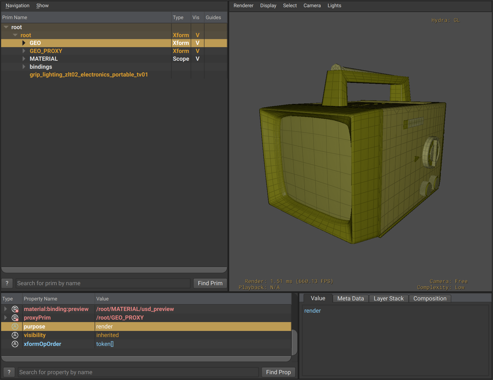
若是我們如法炮製將 /root/GEO_PROXY purpose 也改為 proxy；除非當下活躍中的渲染對象強迫徵召顯示所有帶有 proxy 標記的傢伙們出面，否則您將永遠見不到它的殘影：
🖼️ Proxy 的目的
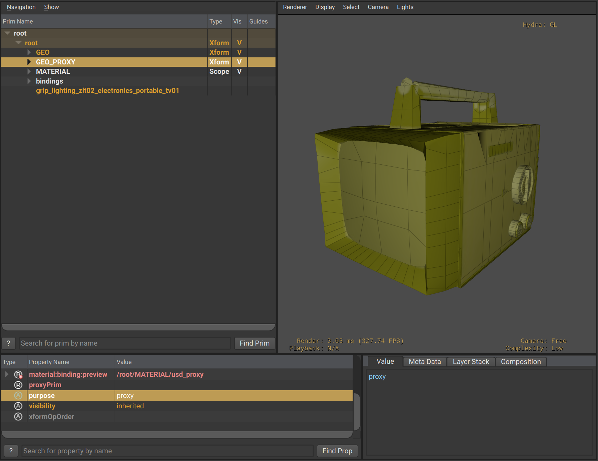
📝 延伸閱讀
Specifier (識別定義子)
在定義 scene graph (場景圖層樹) 中的 prim 時，總共有三種宣告方式可供選擇。
ℹ️ 提示
為了解釋方便，在下方我們展示的數個例子中都將採用純文字格式的 USD text 組成結構作為教材，因為
usdview的基礎軟體介面無法直接將這種虛擬的定義概念視覺化。
🔰 **def**
這是一種具體的實體定義宣告。這種語法格式通常在兩種情況下出現：第一，當您首次建立並定義一顆全新的 prim；第二，當某顆現存的 prim 出現變動且需要被「重新定義」時。在場景架構中，
def永遠 會對您的場景最終 composition (合成) 成果構成實際的影響與改變。def Xform "MyTransform" { # ... }
def也能夠以不帶任何 type 型別標籤的 (type-less) 方式宣告！通常當您遇到這類寫法時，代表這顆 prim 參與了複雜的 composition 作業。在未來的合成運算過程中，別的圖層將會為主動提供並補上它真正該有的 type 屬性。def "MyPrim" { # ... }
🔰 **over**
這代表向 USD 宣告該 prim 將被覆寫。只要在名稱前綴加上這個字，即表示該 prim 預期要在底層架構中被「覆寫（overridden）」。一旦掌事系統的 composition engine (合成引擎) 在沿著階層尋找時，卻在指定的區域找不到被對應覆寫的來源物件時，這個由
over構成的宣告就會被系統忽略，這也代表著它不會對最終的場景合成產生任何影響。over "SomethingThatAlreadyExists" { # ... }
🔰 **class**
這代表宣告定義了一種抽象（abstract）物件。在預設情況下，帶有此標籤的 prim 是會被 stage traversal (場景遍歷) 給忽略的。這意味著，當您展開整個 stage hierarchy 檢視時，並不會看到該物件直接顯示出來；儘管它是不可見的，但其他正常的 prim 卻能夠「擷取並繼承 (inherit)」這尊 class 所定義的任何屬性與規則（詳情將在後續的 Composition 章節中深入探討）。
class "_MyClass" { # ... }
📝 延伸閱讀
Composition Arcs (核心合成弧)
USD 的 composition engine (合成引擎) 利用了多種不同的機制來進行混合組裝的工作，這些機制被統稱為 Composition Arcs (合成弧)。簡而言之，它們是一套操作規則集 (或運算子)，用以嚴格定義多個 layer stacks 以及其內含的 opinions (意見與主張) 該如何交織與整合。
接下來我們將探討每一種 composition arc 的運作方式與細節。
📝 延伸閱讀
Local/Sublayer (本地與子圖層)
每一層 Layer 皆能夠透過 sublayer (載入子圖層) 的方式納入其他 Layers。這種機制 (grafting) 可將來自多個來源的獨立 layer stacks 無縫串接為單一體系。實際上，USD 中的 Layer Stacks 便是透過 sublayering (疊加子圖層) 逐步堆疊而成的。
🛑 警告
在進行 sublayering 操作時，檔案載入的先後順序非常重要 (Order matters)！
例如：假設我們在 layer_a.usd 中的 /Foo 路徑下定義了一顆 Cube prim；而在 layer_b.usd 中，我們在相同的 /Foo 路徑下定義了一顆 Sphere prim。當我們在 layer_c.usd 中同時將這兩者以 sublayer 方式引入時，/Foo 最終會是方塊還是球體？這會取決於匯入 layer_a.usd 與 layer_b.usd 時的 載入順序 (order)。
🖼️ Sublayering 實機範例
在此範例中，包含
a_cube.usd、a_sphere.usd以及用於整合收尾的cube_and_sphere.usd。
a_cube與a_sphere各自分別定義了一顆獨立的 Cube (方塊) 與 Sphere (球體) prim。在cube_and_sphere圖層中，雖然自身未定義任何實體，但藉由 sublayer 將前述兩個圖層疊加，本質上即是將兩個 hierarchy 體系融合，最終匯集成為專屬於cube_and_sphere自身 Layer Stack 裡的一部分。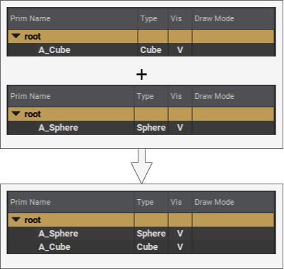
⚠️ 注意
請注意，Sublayering 這種行為是在「圖層的根節點 (roots)」進行疊加貼合。如果您的目的是在 hierarchy (階層樹) 的「特定位階或子節點上」插入並組合不同的圖層，則應該使用的是名為 reference (參照引用) 這種 composition arc。
📝 延伸閱讀
Reference (參照/參考)
Layer References (圖層外部參照)
除了 sublayers (子圖層疊加) 機制之外，Layer 也可以被掛載 (grafted) 於單一的 prim 之下。延續在 Local/Sublayer (本地與子圖層) 中提及的 Cube 與 Sphere 範例，我們可以建立多個新的 prim，並讓它們各自指向 (point to) 這些外部的 layer 檔案。
🖼️ Layer referencing 圖層外部參照
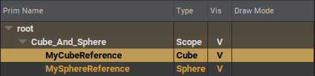
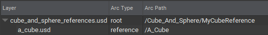
Local References (本地圖層內部參照)
雖然 referencing 通常適用於參照外部檔案 (file paths)，但它同樣支援內部圖層的參照。您可以將參照屬性關係指向「與當前 prim 身處於同一層 Layer」的另一個物件進行定義。這種方式被稱為 Local Reference (本地參照)。
🖼️ Local referencing 本地參照
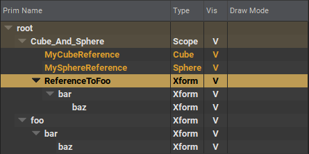
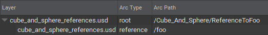
您只需透過 Reference 將目標指向特定的 prim（如 </foo>），接著該目標下的所有 hierarchy (階層結構) 將會被完整載入並置於當前的 prim 之下：
def "ReferenceToFoo"(
prepend references=</foo>
) {
}
Layer Prim References (圖層中指定 Prim 參照)
Composition (合成機制) 是建立在 Layer stacks 之上的。這表示您不僅可以參照整個圖層，甚至可以從其他 Layer 的 layer stack 中精準參照一顆特定的 prim！即使這些被參照的 prims 本身也是來源端 Layer stack 經過合成運算後的產物，皆能順利被參照引入。
🖼️ Layer Prim referencing 圖層中指定 Prim 參照實作
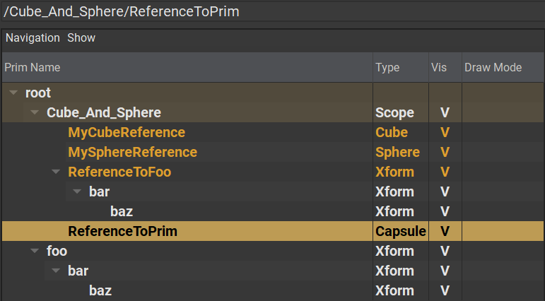
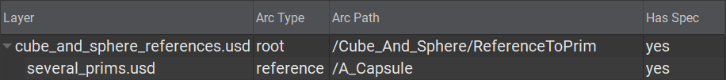
def "ReferenceToPrim"(
prepend references= @./several_prims.usd@</A_Capsule>
) {
float3 xformOp:translate = (3, 0, 0)
uniform token[] xformOpOrder = ["xformOp:translate"]
}
📝 延伸閱讀
VariantSet (變體集)
VariantSets (變體集) 與其包含的 variant (變體分支)，賦予了圖層中的 prim 提供多層「可切換 (switchable)」狀態與組態的能力。在下方的範例中，一顆位於最頂層 (top-level) 名為 Implicits 的 prim 掛載了一組名為 Shape 的 VariantSet。此組 VariantSet 內部結合了多個不同獨立設定的 variant 選項，它們確保使用者在切換不同的支線選項時，能載入截然不同的型態設定與層級樹變更。
當使用者切換至不同的 active variant 取代當下預設值時，USD 會將該變體內所記錄的所有屬性與設定，直接匯入注射 (inject) 至系統主流的 composition (合成) 流程之中。在此具體範例中，各個 variant 分別為 Implicits 提供了不同 type 設定的子物件參與構成。選擇不同的 variant 便能手動切換生成為 Capsule (膠囊體)、Cube (方塊) 或是 Sphere (球體)。
🖼️ Variant/VariantSet 切換範例
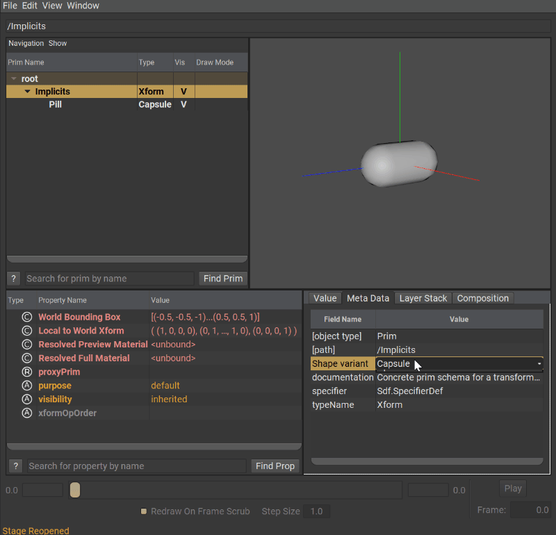
在撰寫與定義 variant 時，您在架構上享有極大的開發彈性。您可以在單個 variant 模塊中建構全新的層級樹 hierarchy、利用 reference 參照外部的圖層檔案、追加屬性覆寫 (opinion) 或是設定 metadata。但在使用這項機制時遇到多個可選變數環境，有一個要點務必銘記在心。
⚠️ 警告
對於任何單獨的 VariantSet 而言，無論內部定義了多少可選的 variant (變體分支)，它的規矩是：『同一個時間內絕對僅允許有一個 Variant 是處於啟動 (active) 狀態的！』。
📝 延伸閱讀
Payload (酬載延遲載入)
Payload 是一種支援「延遲載入 (lazily loaded)」的進階 reference (參照引用) 機制。當某顆 prim 透過 Payload 掛載圖層資源時，USD 會在預設情況下不主動載入這些圖層資料，直到使用者後續手動要求載入為止。
當被引用的外部圖層檔案包含龐大的資料量或極度複雜的 hierarchy，導致整體檔案沉重時，將其轉換為 Payload 讓使用者在 stage (舞台) 中視需求分批載入，可帶來莫大且直接的效能與流暢度收益。整體而言，被歸類為「非場景核心優先」的物件或圖層，都建議透過 Payload 的形式來進行掛載防護。未被載入的 Payload 將不會參與系統的場景遍歷 (stage traversal)，因此在決定哪些資料為必備的「核心關鍵 (important)」內容時，必須端看當下的專案需求而定，以防重要資料遭遇載入延遲。
實戰範例 → 透過 Payload 延遲載入高面數模型
當我們選擇預設不載入 (unloaded) Payload 的時候，hierarchy 的結構顯示看起來會如下圖這般空洞：
🖼️ 未載入的 Payload
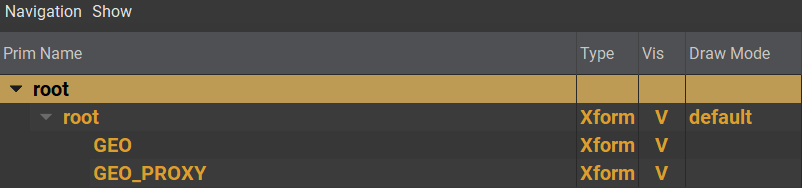
然而這個 Payload 會保留其 prim 的節點標示，允許使用者在載入 stage 之後，隨時能像開關一樣進行載入狀態切換 (toggled on/off)。
🖼️ 切換 Payload 的載入/卸載狀態
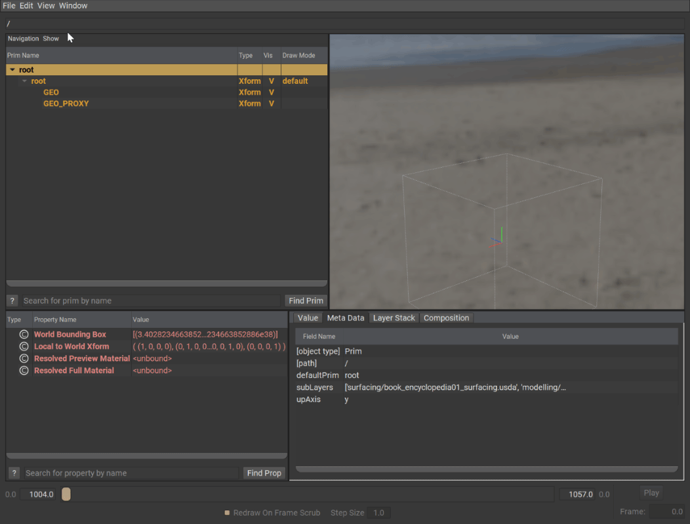
一旦開啟載入，完整的 hierarchy 層級樹就會被全數讀取進來：
🖼️ 成功載入 Payload 後的結果
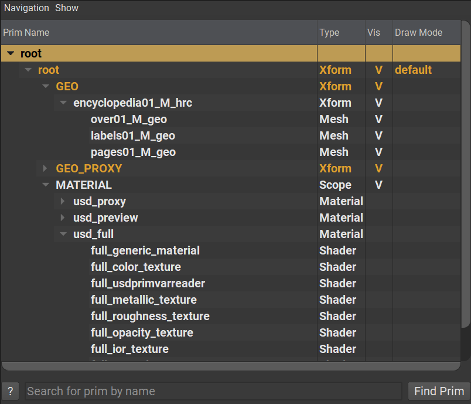
🔰 **simple_payload_example.usd**
#usda 1.0 ( defaultPrim = "Asset" ) def Scope "Asset" { def Xform "Geometry" ( prepend payload=@./highres_model.usd@ ) { } }
📝 延伸閱讀
Inherits (繼承)
這與軟體開發領域中的「繼承 (inheritance)」概念雷同。Prims 可以「繼承」自其他的 prims (無論被繼承方是實體 prim 或是 abstract 抽象類別)，並忠實反映出該被繼承目標的所有 hierarchy 與屬性特徵。這表示，只要作為繼承源頭的物件 (base prim) 被修改了，所有繼承自該源頭的子代 prims，皆會在第一時間自動套用並繼承這些聯動的變更。
若在單一圖層 (Layer) 的環境下，Inherits 與 Local Reference 的作用十分相近。然而，在多圖層的 Composition (合成) 結構中，Inherits 展現出了獨特的優勢。普通的 References 在引入 Layer stack 之後通常會直接定型成為封裝體。這表示若 references 被遷移至其他的 Layer stack 時，便會喪失對源生圖層的繼承連帶羈絆關係。而 Inherits 則是維持「即時連線 (live)」狀態，無論在 composition 的過程中歷經多少次巢狀結構，或是目標 prim 被後續的圖層所覆寫，帶有 Inherit 的 prim 都能夠確保回溯 (backtrack) 至最初的源頭本尊 (base) 位置，無視合成層級的隔閡。
⚠️ 警告
注意：Prims 無法繼承自身的「直系先祖 (ancestor)」或「子代 (descendant)」。用作被繼承來源的物件 (bases)，必須定義在同一階層的旁系 (siblings) 位置上，或是完全獨立於目標 prim 原生的樹狀階層與架構之外 (例如定義於最頂層 root 位階)。
實戰範例
在此案例中，SomeScope、SomeMesh 以及 SomeTransform 各自被實體定義且帶有專屬的型別。同時，它們也共同繼承了一顆名為 _Base 且狀態為 abstract (抽象類別) 的 class prim。而 _Base 本身底端定義了兩個獨立名為 Foo 及 Bar 的 Xform 子節點。
因 _Base 屬於 class 類型，並不會主動參與於常規的 Stage Traversal (場景遍歷) 中，自然也不會顯示於常規的層級樹內。要檢視其結構，必須在 USDView 中開啟顯示 Abstract Prims 功能。
🔰 **
_Base是如何被定義的？**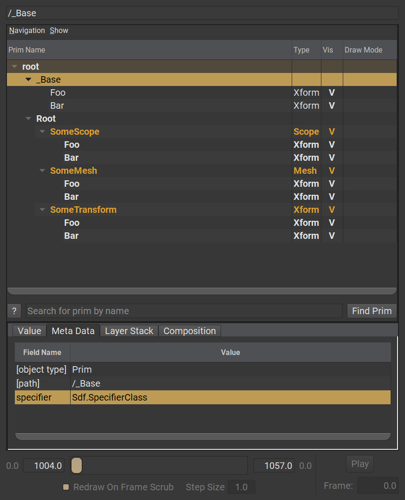
繼承 _Base 的結果，會使 _Base 旗下的所有子節點 hierarchy，完美轉移並複製至所有繼承它的目標 prim 體系之內。
🖼️ Simple inherits (單純繼承範例)
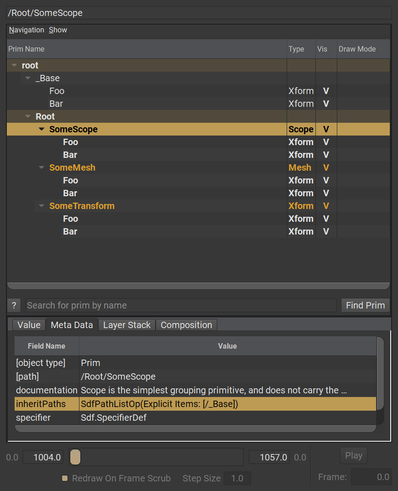
若日後我們修改了 _Base 源頭，這些變更將立即反應在所有繼承它的所有 prim 系列上，無需對個別的繼承實體進行額外的介入。以下方範例做展示，我們在源頭 /_Base/Bar 路徑之下新增了一個名為 Baz 的 prim 參數節點：
🔰 **歷經更動後的
_base**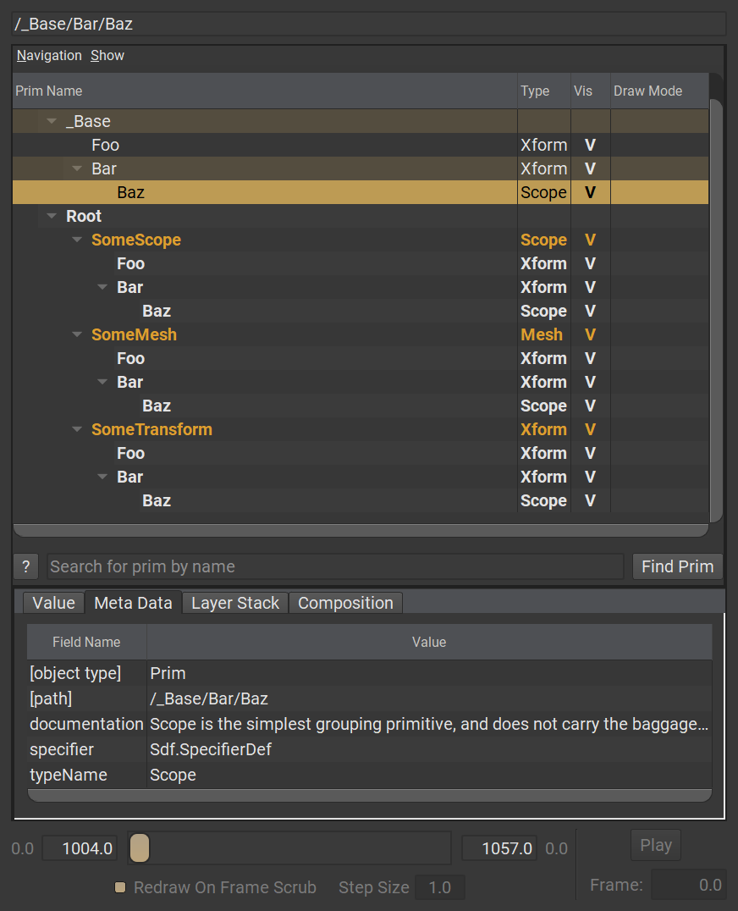
📝 延伸閱讀
Specializes (特化)
「Specializing (特化)」是一種以 prim 及旗下 hierarchy 為基礎定義，並進行進階精煉 (refining) 來產生特定客製化分身 (specialized version) 的機制。舉例來說，您可以將一個標準的 Metal 金屬材質予以特化，修改部分屬性後創造出一個獨立的 CorrodedMetal (腐蝕金屬) 材質。這種「特化與精專」的應用層面廣泛，從調整材質基礎數值，甚至到重新定義整組 shaders 或是貼圖結構皆可達成。總體來看，這機制與 Inherits (繼承) 具有高度的相似性！然而，兩者之間存在著一項最核心的差異（key difference）。
💡 提示
「不論面臨何種層級的系統覆寫，只要本身被寫入定義為 Specializations (特化) 的 Opinions (意見/主張)，它永遠擁有最高順位的優先權勝出。」
一旦有其他的 Opinion 試圖對已處於 specialized (特化) 狀態下的屬性提出覆寫挑戰時，該特化屬性仍會維持原判，並主動略過及捨棄這些外部的覆寫請求。這項判定邏輯若放到 Inherits (繼承) 的規矩脈絡中，結果則會完全反過來。
⚠️ 警告
您無法將某顆 prim 單位的「直系先祖 (ancestor)」或是「子代 (descendant)」作為它的「特化來源 (source)」。能夠作為被特化來源 (bases) 指標的基準物件，僅能是旁系的階層物件 (siblings)，或者是存在於本目標原生階層定義之外的其他獨立 prim 體系。
實戰範例 → 產生腐蝕痕跡的金屬特化材質
此範例中包含兩張圖層：robot.usd 還有 world.usd。
Robot.usd
robot.usd 圖層中定義了一顆 Robot prim，並包含著三個做為材質的 prims：Metal、CorrodedMetal 以及 InheritedMetal。其中 Metal 材質身上被賦予了兩種基礎的屬性：分別是 inputs:diffuseGain 與 inputs:specularRoughness。
🖼️ robot.usd
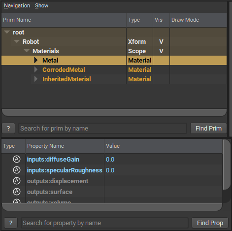
其中，CorrodedMetal 即為 Metal 因應特化 (specialization) 而產生的變體。為達成這項目標，我們對 inputs:specularRoughness 屬性進行特化，明確宣告並鎖定其數值為 0.2。
🖼️ 遭到特化宣示的 metal
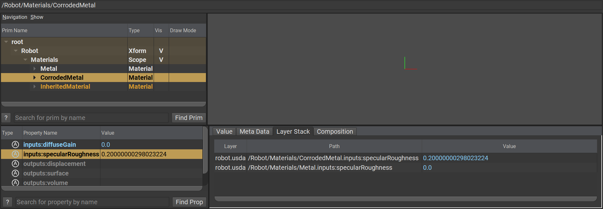
def Material "CorrodedMetal" (
specializes = </Robot/Materials/Metal>
)
{
# 取出粗糙度來進行特化專精...
float inputs:specularRoughness = 0.2
}
相反地，InheritedMetal 是單純透過 inherits arc 對 Metal 進行標準繼承的物件。值得留意的是，不論是採用 inherits 繼承法還是透過 specializes 特化法，最終呈現出的文字結果是一致的！CorrodedMetal 與 InheritedMetal 同樣完美獲取與繼承了來自 Metal 攜帶的資產參數，但對於 inputs:specularRoughness 卻也同時有著強勢覆寫的主張意見 (opinion)。
🖼️ Inherited metal
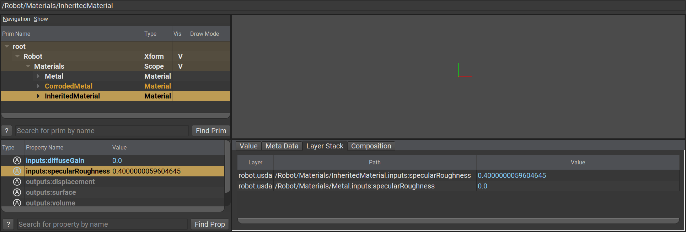
world.usd
而在 world.usda 中，此圖層透過 reference 參照整併了 robot.usda 檔案，並且對已經存在著的源頭 Metal 提出了 Opinion 意圖覆寫它的基礎。其內部宣示了 inputs:diffuseGain 和 inputs:specularRoughness 皆須被變更為 0.3 與 0.1。
🔰 **world.usd**
#usda 1.0 def Xform "World" { def "RosieTheRobot" ( references = @./robot.usda@</Robot> ) { over "Materials" { over "Metal" { float inputs:diffuseGain = 0.3 float inputs:specularRoughness = 0.1 } } } }
所以 Inherits (繼承) 和 Specializes (特化) 兩者的差異？
當我們仔細檢視 world.usd 歷經合成後的 opinions 結果，您將會發現：那些原先意圖覆寫在 Metal 身上舊有數值（inputs:diffuseGain 與 inputs:specularRoughness）的意圖以及力量，確實被延展發散並反應到了普通的 InheritedMaterial 身上，但對於那顆受到「特化位階」保護傘防衛之下的 CorrodedMaterial 則並未受到任何的影響與改變。
| 源自 Base Metal 的外部強制覆寫 | 作用在 InheritedMaterial 的檢視結果 | 作用在 CorrodedMaterial 上的檢視結果 |
|---|---|---|
over “Metal”{ float inputs:diffuseGain = 0.3 float inputs:specularRoughness = 0.1}
| 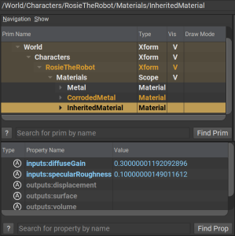 | 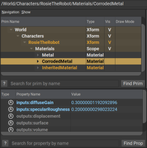 |
如同在上方過程所見，即便我們透過了最極端與強大的優先權去嘗試將源頭 Metal 及其旗下的任何直系關聯進行覆寫，系統仍會遵守該條鐵則： 一旦掛上了特化 (specializations) 標籤，該意見將會恆定成為最高優先順位的贏家。
📝 延伸閱讀
Strength Ordering (優先權強弱排名 LIVRPS)
Composition (合成) 機制與 opinion (意見/主張) 覆寫時的權重判定有著密不可分的關係。USD 為此制定了一套嚴謹的判定規則。每一種特定的 composition arc 都被系統賦予了對應階級的「權重值 (strength)」。舉例來說，當系統中有針對同單一屬性發出多個衝突意見 (例如分別來自同一份 layer stack 中三條不同的 composition arcs) 時，系統將依據「誰的權重名次最重 (strongest)」來仲裁，並採納該對象的值為最終定案。此規則的排列字首縮寫即為技術圈常稱呼的：LIVRPS (讀音似 Liver Peas)。
首字母縮寫 LIVRPS 代表了以下 6 大門派位階，權重順序由上而下遞減：
Local (本地圖層)Inherits (繼承)Variants (變體)References (參照)Payloads (酬載延遲載入)Specializes (特化)
這個階層式的清單，可視作一個由上而下遞減檢索的結構 (top-down stack)。當 USD 需要對指定的屬性 (property) 或 metadatum 進行 opinion 衝突排解時，系統將遵循上方羅列的順序位階，由高至低逐一掃描各層 composition arcs。掃描途中一旦發現其中包含有效定義的 opinion，該往下的探尋流程便會立刻中斷，直接採納並沿用該節點的值。如果直至底層整個流程都沒有搜尋到任何使用者編寫的 authored opinion，USD 將會退回採用該屬性或資料所指定的出廠預設值。
除了最頂階的 Local 以外，當其他的 composition arcs 被調用觸發時，皆會啟動深度遞迴式的 LIVRP(S) 權重重新尋訪與驗證流程。然而在這反覆的驗證探尋迴圈中，位處名單底端的 S(pecializes) 基於系統設計考量將預設被系統略過並隱藏。除非當下的檢索評估本來就是為了處理 Specializes 中相關的元件事件，這才會啟動涵蓋並呼叫完整包含 S 的 LIVRPS 調查名單。
下方的決策流程圖展示了在特定條件下，如何決定並取用不同的 opinion values。
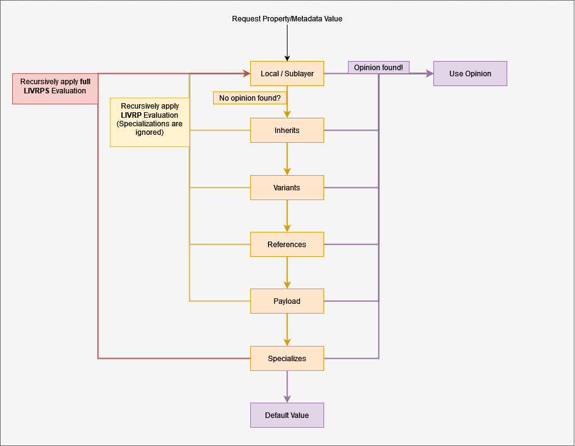
📝 延伸閱讀
Default Prim (預設 Prim 設定)
撰寫新層級圖層 (layer) 時，可以順帶賦予並綁定一顆名為「default prim (預設主物件)」的指標。這項設定可視作是被寫入該層 layer 裡的預設中繼資料 (metadatum)。內部記錄了該圖層當中最能作為主體代表的那顆 prim 名稱資訊；此舉使得這張 layer 在日後被其他的 reference 或是 payload 掛載時，若呼叫方沒有明確指定想參照哪一個特定的 prim path 節點路徑，系統就能「自動地」去調出這位被註冊為 default prim 稱號的物件代表出席。
這項作為圖層代表呼叫的目標，所指向的目標必須是位於層級樹最頂級 (root level) 路徑下的 prim 節點。也就是能夠直屬於最高 PseudoRoot 層級的直系子物件。受限於這條硬性定義的規則，嘗試賦予一個深層且迂迴的「路徑 (path)」成為預設標的是絕對不允許的行為。
🔰 **撰寫在 Layer Metadata 中的
defaultPrim合法範例**#usda 1.0 ( defaultPrim = "PrimName" ) def "PrimName" {}
🛑 **這是不合法的
defaultPrim寫法**#usda 1.0 ( defaultPrim = "PrimName/NestedPrim" ) def "PrimName" { def "NestedPrim" {} }
如果 defaultPrim 的目標沒有具體撰寫，或指向了未能符合規則的深層物件，USD 編譯器將會拋出錯誤訊息，並亮出 “unresolved reference prim path (無法解析的參照 prim 路徑)” 的警告。這也將導致以其作爲目標對象的合成作業在途中斷線崩潰。
Warning: ... In </reference>: Unresolved reference prim path @.../defaultPrim.usda@<defaultPrim> ...
💡 提示
重要規則：若您預設這層 layer 在日後將被作為其他人的 reference 或是 payload 的目標素材來源，那該名稱的屬性對象
defaultPrim，務必將其完整設置與指定。
實戰範例
在這次的示範場景中包含兩張圖層：第一張在最高根目錄 (root) 路徑下定義了多個物件 prims (名為 defaultPrim.usda)，第二張圖層則透過參照引入了第一張圖層 (名為 reference.usda)。
🖼️ defaultPrim.usda
#usda 1.0 ( defaultPrim = "CubePrim" ) def Cube "CubePrim" {} def Sphere "SpherePrim" {} def Cone "ConePrim" {}
請注意，圖層 reference.usda 的內容單純僅參照了圖層檔案此一「整體概念」，並未明確點名欲匯入 defaultPrim.usda 內部這堆 prims 名冊裡的哪位特定對象：
🖼️ reference.usda
#usda 1.0 def "reference"( prepend references= @defaultPrim.usda@ ) { }
一旦我們開了個 usdview 舞台，把這張作威作福的 reference.usda 圖層攤開來檢視時我們便會驚訝地發現：唯有那個最幸運、最關鍵的 prim 得以被拔擢進它層高高在上的 Layer Stack 當中，此人不是別人，正是那位傳說中的方塊君 Cube。
🖼️ 顯示出來是 Cube
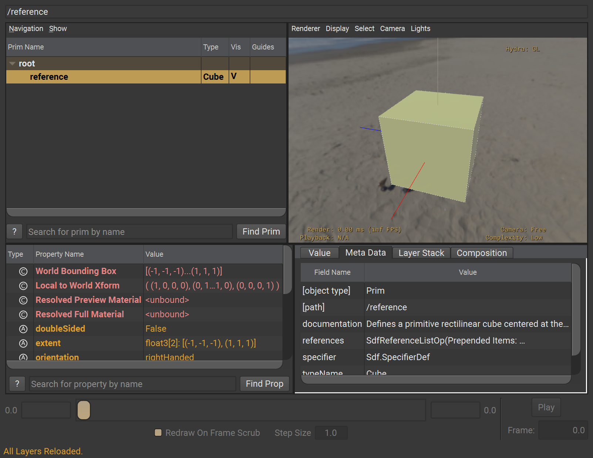
若是我們翻臉不認人，回去把出廠設定上的那個 default prim 中繼標籤給硬生生換成了例如： defaultPrim = "SpherePrim" 時，這回該位身形圓潤的球體 Sphere 就會雀屏中選，取而代之被當成被參考的對象拉過來了。
🖼️ 變成了 Sphere
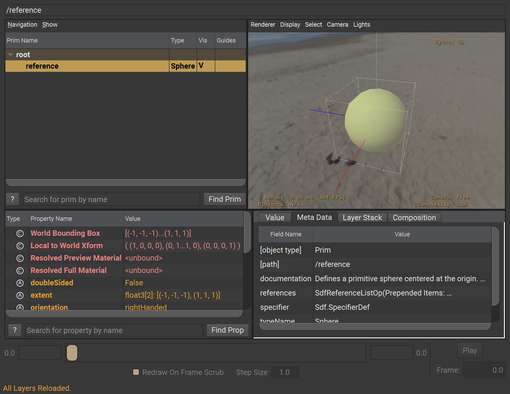
倘若您有顆熊心豹子膽，手起刀落直接乾脆俐落地把 defaultPrim 身上掛的那些中繼標籤整個根除了，那它能還您的也就只有無盡的空虛了 —— 留下一條空空蕩蕩啥屁都生不出來的參照死路 (empty reference arc)。即使「這張 layer 本身」理論上依舊處於被拉近去參考掛載的進行式當中，但是那層裡頭原先安穩住著的那些 prims，就一個也不會被抓出來陪葬出現在您的舞台裡組成結構 (composed) 了。
🖼️ 結果啥都沒有
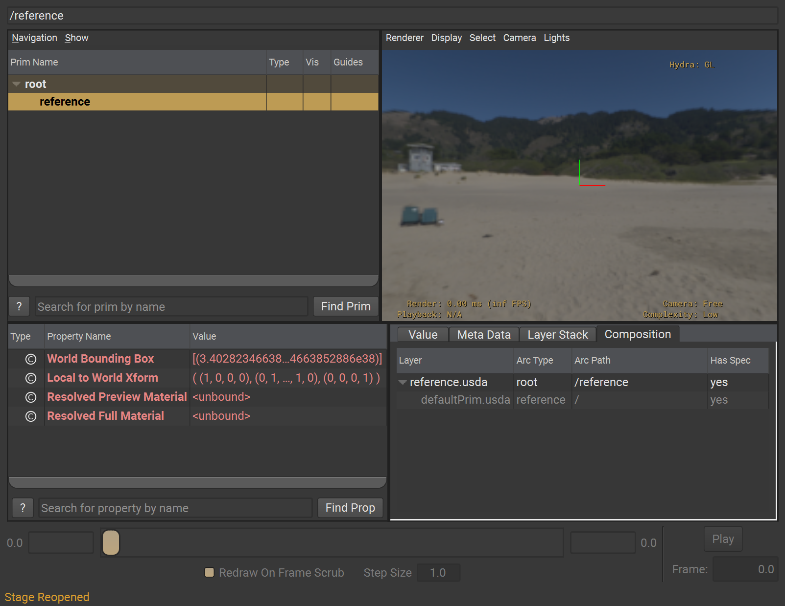
💡 提示
↪ 本文內容在 USD Glossary 官方字典中無編列字條！
List-Editing (清單編譯作業)
List editing (清單編譯作業) 是 USD 內部的一項功能機制，允許創作者以非破壞性 (non-destructively) 的方式，對場景圖 (scenegraph) 裡屬於「清單類型」的元素進行編輯。您可以在 composition (合成) 的運算過程中，無縫地在清單中安插 (append、prepend) 或移除 (delete) 項目；甚至能夠以顯式的語法，強制覆寫 (explicitly override) 整個清單內容。這類操作通常適用於以下元素：references、relationships、custom metadata、inherits、specializations 以及 variantsets。需要特別注意的是，被標記為清單型別 (list-type) 的屬性 (Attributes) 無法使用 list-edited。
在下方的範例中，我們覆寫 (override) 了一顆 prim 身上的 references 清單，在其清單最前方 (prepend) 加入了一個指向另一個圖層的全新 reference 參照連結。這種操作會使該 prim 同時參照兩個不同的圖層（在假設套用覆寫前原始的定義僅指向單一圖層的情況下）。
🔰 **操作 references 參考的清單編輯範例**
#usda 1.0 over "World" { over "Foo" { # 覆寫 "Bar"，使其除了原本的 references 之外，額外增加參照 baz.usd over "Bar" ( prepend references = @./baz.usd@ ) { } } }
📝 延伸閱讀
EditTarget (編輯目標層)
當在 stage (舞台) 中開啟並檢視某個 layer 圖層，並對場景樹 (scene graph) 進行編輯修改時，這些編輯操作在預設情況下都會被寫入並記錄於「Root Layer」(即最初建立 stage 時所使用的基礎圖層)。
但在一個多重圖層與 composition arcs 交雜的複雜專案中，通常會有需要單獨針對某一層特定的 layer 進行內容編輯的情境。與其單獨將該層 layer 給單獨開啟出來編輯，USD 提供了一項名為 EditTarget 的功能機制。透過 EditTarget，使用者可以直接指定接下來所有的編輯變更 (例如：強制覆寫 overrides、修改階層架構等…) 應該被明確記錄至 哪一層指定的 Layer 上。
憑藉這個機制，使用者可以在「經過完整合成運算的大型場景 (fully composed scene)」中持續檢修畫面，並同時確保這些編輯變更精準寫入構成該場景的特定原始圖層中。這種工作流大致上就像是在擁有多層圖層的 Photoshop 檔案中，切換選擇 Active Layer 以確保下筆能落在正確位置的概念一般。
💡 提示
這是 USD 架構下的核心工作流 (Core workflow) 要素之一。
🔰 **Session Layers 暫存任務快照編輯層**
當每次 USD 建立並載入 stage 的同時，其底層系統預設也會建立一個被稱為 “Session Layer” 的圖層空間。
這個空間可視作隨附的一塊「獨立塗鴉板區 (scratch space)」，它相當適合被指派為
EditTarget來將任何草稿型的變更完整記錄下來，且確保這些實驗性修改不會污染到場景中原始被引入的圖層 (original layers)。Session Layer 在整個 stage 的 layer stack (圖層堆疊) 中會被永遠錨定於最高點位置 (在系統底層，每個 stage 自行保有一套獨立的 layer stacks 架構)。它就像在 layer stack 裡的其他圖層一樣履行各種圖層職責。一旦在該 session layer 中寫入了修改與宣告 (opinions)，由於其高高在上的優先級，它產生的意見將會永遠擁有最強的力量 (strongest)，能夠覆蓋下方所有其他圖層的同值屬性。
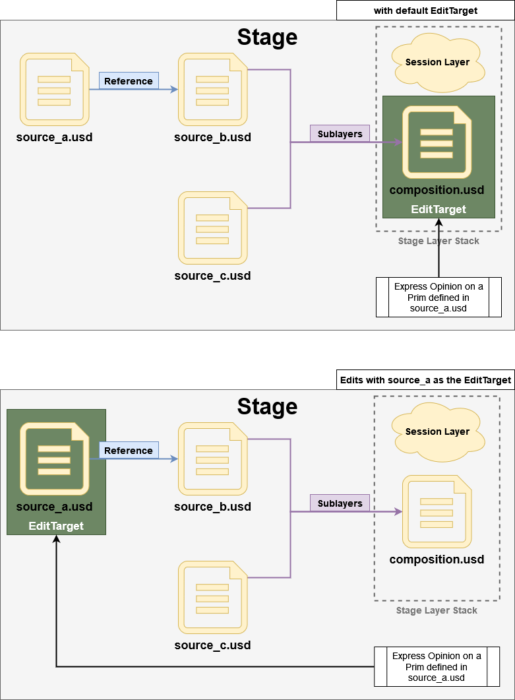
📝 延伸閱讀
Instancing (實例化技術)
Instancing (實例化技術) 是 USD 中的一項機制，允許特定結構在讀取與操作時降低記憶體用量與合成 (composition) 複雜度。 舉例來說，當某層 layer 被參照 (reference) 指定到某顆 prim 時，USD 預設會為該 layer 所涉及到的 每一條 reference，重新去進行一次完整的結構合成編譯 (re-compose)；即使所有引用的參考皆是指向同一層 layer。
然而，當使用 Instancing 機制時，USD 會在背景建立一個以參照結果所構成的『原型 (Prototype)』。接下來凡是指向該來源 layer 的參照連結，都會被置換成一種專門對應到該 Prototype prim 的小型連線模式 (local-reference)。此舉優化了 USD，使系統只需對被當作參照物的 layer 其背後的 layer stack 合成運算『一次 (only once)』即可。
⚠️ 警告
這種架構伴隨著一個運作限制：若在身上掛有參照層的那個實例化 prim (instance prim) 之下，你對其更底層的子物件所進行的任何屬性覆寫變更 (overrides) 皆會被 USD 無視並忽略 (ignored)。
🖼️ 大量實驗瓶參照著相同的原始層 layer
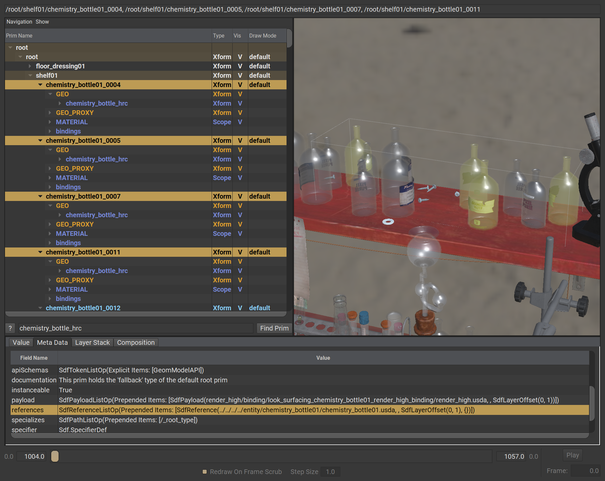
在上圖範例之中，所有被選取的實驗瓶 prims 皆是參照自 chemistry_bottle01.usda 檔案為原始樣板，且這幾筆參照同時都被加入了 instanceable = true 的中繼資料 (metadatum)。這筆標記資料告訴了 USD，它只需要針對 chemistry_bottle01.usda 合成一次對應至 __Prototype 的 prim 中即可。而在完成之後，所有指向 chemistry_bottle01.usda 的參考連線，在內部機制上實際上皆轉換成了指向 Prototype prim (在本範例中被命名為 __Prototype_37) 的本機內部參照連線 (local prim reference)。
🖼️ 對應 Bottle prototype 的主 prim
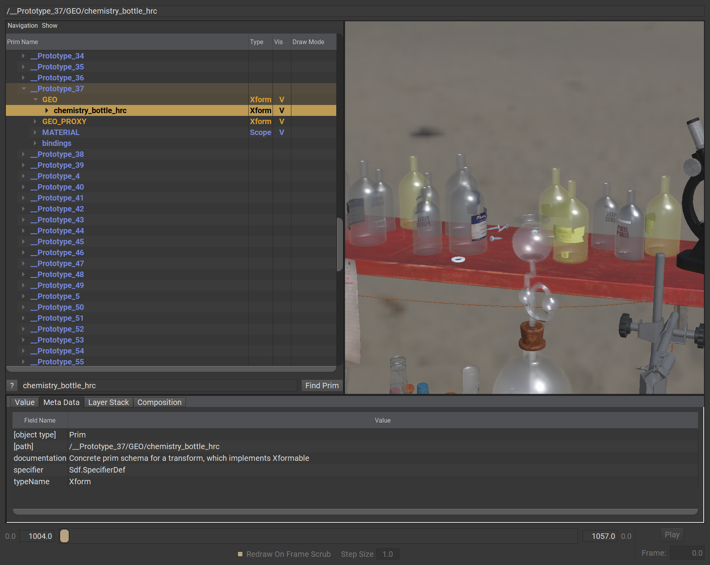
⚠️ 警告
當一顆 prim 被標記成 instance 時，Stage Traversal 機制 (場景遍歷) 會在此 prim 節點前止步，並不會往下遍歷其子層架構。
📝 延伸閱讀
Schemas (圖解架構綱要)
Schemas (模組綱要) 用於「描述與定義」 Prims、properties (屬性)、metadata (中繼資料) 等元素。Schemas 賦予了 USD 理解 Prim 或是特定屬性背後涵義與行為模式的能力。 透過掛載 Plugins 套件，USD 允許擴展並套用全新的 schemas 以延伸其核心功能，進而自訂全新的屬性組合、建立全新的 prim 型別、以及定義自訂的 metadata 等。
若要建立新的 Schemas，通常需要使用 .usda 檔案格式來撰寫 schema definition (綱要定義檔)，這些定義隨後可用來自動生成對應的原始碼 (source code) 與 plugin 執行檔。
簡而言之，USD 預設提供的 default prims 與 default properties，在本質上也是由 Pixar 開發團隊在系統底層所建立的標準 Schemas！
💡 提示
自 USD 21.08 版本起，Schemas 不再強制依賴預編譯的機器代碼 (code) 才能運作。這意味著現在僅需 plugin 本身的存在即可發揮效用，這種機制被稱為：
codeless schemas。
一般來說，使用者在撰寫 (author) schemas 時所建立的類別，大致上分為以下兩種：
🔰 **IsA Schemas**
🔰 **API Schemas**
📝 延伸閱讀
IsA Schemas (IsA 結構描述)
它那用來被丟回當後備方案用的退路兜底基本預設值 (The fallback values) 說到底其實就跟 Cube、Sphere、Cone，還有 Cylinder 那些老兄們如出一轍。他們這輩子最大的命運：大概也就是都給一起縮進然後塞進同一個用來包覆他們的容積界線 (volume/bounds) 框體宿命裡的那些爛帳這點不會變。""" customData = { dictionary extraPlugInfo = { bool implementsComputeExtent = true } }) { double size = 2.0 ( doc = “”“這一道屬性 (Indicates the length) 指著這該死方塊身上每個冰冷邊緣的實際邊緣長度。 如果您老兄今天有種去敢撰寫了 \em size 您就非得被強逼無可避免地也要去給它把這條 \em extent 也一併給撰寫上去。
\\sa GetExtentAttr()""" ) float3[] extent = [(-1.0, -1.0, -1.0), (1.0, 1.0, 1.0)] ( doc = """這條名為 Extent 強制拓展範圍線底限長度的破屬性 之所以破天荒會需要單獨為了 Cube 而被生生拿來重新界定一遍 (re-defined on Cube only) 不為甚麼，無非就是想被搞出個能夠作為預留備案、後路好走的後備退群防線基本數值來用（provide a fallback value）。 \\sa UsdGeomGprim::GetExtentAttr().""" )}
打造出這種五花八門全新的 prims 系列特製款家族型別，它可以既親民到有如在切上一塊像上面那個無聊爛透頂端代碼的生肉方塊那麼可笑簡單；或者當然了，如果您熱愛刺激的話，這事兒也可以被瘋狂複雜擴張上綱到猶如在無垠荒漠中獨自苦寫開天闢地構築「一套完完整整巨型神經網路錯綜複雜 Mesh (多變網型體)」般的驚心動魄！
📝 延伸閱讀
API Schemas (應用介面綱要)
API Schemas 提供了一種能夠為 prim 「宣告定義 (definition)」進行擴充的機制。它可以打包一組預設屬性 (properties) 與中繼資料 (metadata) 供物件掛載套用，或者提供專屬的程式介面管道用以提取這些資訊。
一般來說，API Schemas 的運作可劃分為兩種主要類型：Non-applied API Schemas (非掛載式) 以及 Single or Multiple-applied API Schemas (單一或多重複數掛載式)。
Non-Applied Schemas (非掛載式綱要)
這類綱要主要用於協助開發人員，提供從較高階的抽象層次來讀取、操縱屬性與中繼資料 (metadata) 的手段。
這類型別的綱要通常不會自行定義出任何屬性，它們的作用純粹是提供讀取與操作的介面通道。
# 以下的 Python 範例展示了如何透過 UsdModelAPI (一種非掛載式的 API schema)，簡潔地將 prim 的 Kind 型別設定完成。
Usd.ModelAPI(prim).SetKind(Kind.Tokens.subcomponent)
ℹ️ 資訊
一般使用者通常不需要直接與這類 schemas 打交道，因為這些往往僅在程式開發操作 (programmatically) 的設計情境中才會被廣泛呼叫使用。
Single or Multiple-applied API Schemas (單一或複數掛載式綱要)
這種類型的 schemas 是使用者在建立結構時最常遇到的。
如同其名 (Applied)，當系統將這類 API Schemas「掛載套用」到某顆 prim 時，該 prim 的原始定義清單內就會自動加入由這組 Schema 所預先宣告搭載的屬性參數群。
舉例來說，若某個掛載式的 schema (我們稱之為 FooAPI) 內部定義了一個名為 foo 的浮點數 (float) 屬性，一旦我們將該 schema 掛載至指定 prim，這該 prim 上便會立即新增出 foo 這個屬性，並允許使用者直接針對其寫入設定與覆寫宣告 (express opinions)。如果使用者沒有對其寫入任何參數，foo 則會退回並保持其 schema 原預設的系統底線值 (fall back to its default value)。
我們再來看一個更具體的實例：能夠負責定義出材質連接屬性的 MaterialBindingAPI。
位於路徑 /Sphere/Mesh 的 prim 之所以能夠連接材質，正是因為其本身的 apiSchemas 中繼資料欄位中已被掛載套用了 MaterialBindingAPI。 (順帶一提，apiSchemas 這筆資料屬性也支援 清單編輯 List-Editable 機制，這意味著使用者有權限能夠自行編輯或覆寫指定 prim 所掛載的 API Schemas)。
🖼️ Applied Schemas 已掛載生效
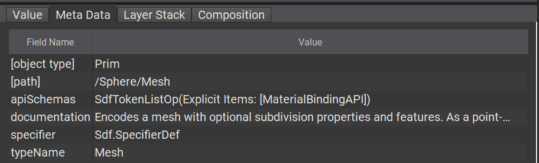
搞明白上述機制後，我們就可以順利地針對這個 prim 所擴充附帶名為 material:binding 的屬性進行了編輯修改。在這裡有一個需要特別注意的特點：您會發現這筆屬性身上註記了一個名為 custom (自訂) 的中繼資料標籤（metadatum）。這個標籤是用來明確宣告該屬性存在且合法歸屬於某個 schema 綱要的管轄之內。整體來說，如果系統發現某個屬性上的 custom 遭人為手動寫死為 True，那麼該屬性在系統中通常只會被判定為是不具合法綱要效力的外部孤立擴充屬性（out-of-schema）。
🖼️ 透過 Schema 預定義而擴充出的新屬性
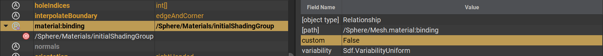
📝 延伸閱讀